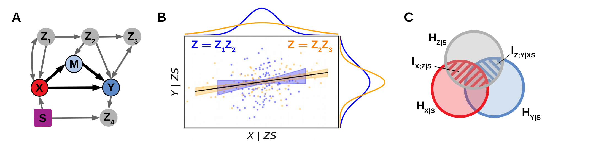
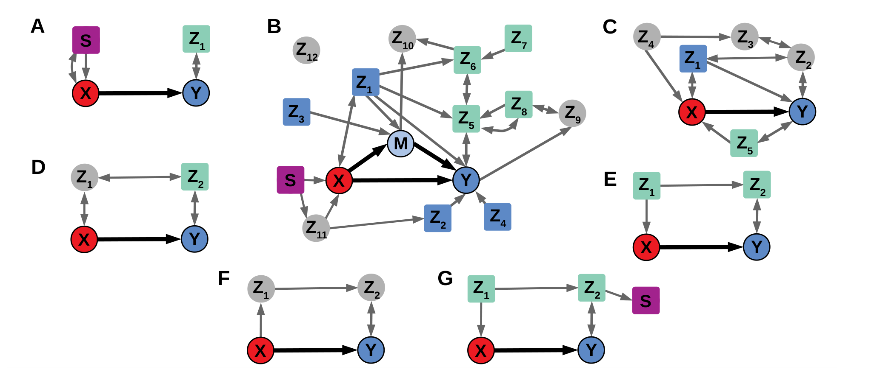
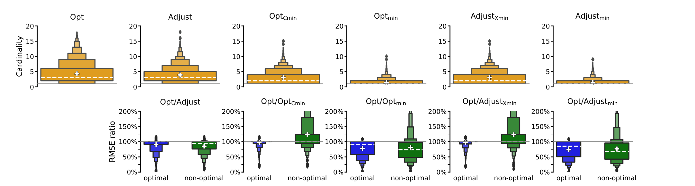
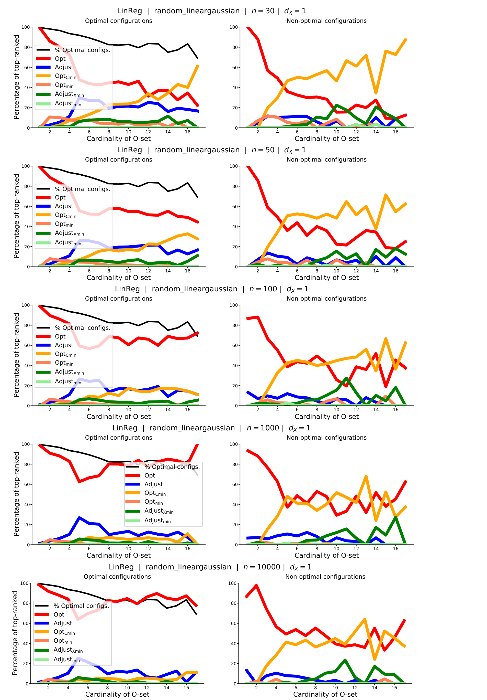
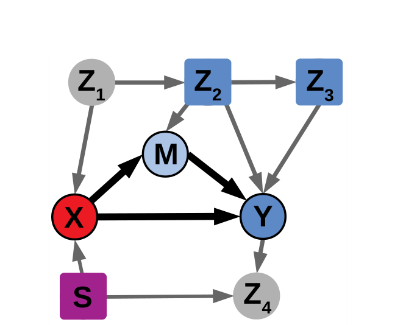

본 포스트는 독일항공우주센터(DLR) 데이터과학연구소 및 베를린공대(TU Berlin)의 Jakob Runge가 단독 저자로 쓴 논문 Necessary and Sufficient Graphical Conditions for Optimal Adjustment Sets in Causal Graphical Models with Hidden Variables(arXiv:2102.10324v4, 2023년 6월 개정판)를 바탕으로, 본문 4개 절과 부록 A–D(추가 정리 · 증명 · 알고리즘 · 실험 상세)를 빠짐없이 재구성한 것입니다. 본문의 정리 · 보조정리 · 예시 번호는 모두 원문 표기를 따릅니다.
논문 정보 (Paper Information)
- 제목: Necessary and Sufficient Graphical Conditions for Optimal Adjustment Sets in Causal Graphical Models with Hidden Variables
- 저자: Jakob Runge (단독 저자)
- 소속: German Aerospace Center (DLR), Institute of Data Science, Jena / Technische Universität Berlin
- 출처: arXiv:2102.10324v4 [cs.LG], 2023년 6월 23일 게재 (초판 2021년 2월, NeurIPS 2021 발표본의 확장 프리프린트)
- 코드: python 패키지
tigramite(https://github.com/jakobrunge/tigramite)에 포함 - 키워드: 인과추론(causal inference) · 그래프 모형(graphical models) · 정보이론(information theory) · 조정집합(adjustment set) · 점근분산(asymptotic variance) · ADMG
한 줄 요약 (TL;DR)
“최적 조정집합이란 조정정보 \(J_{\mathbf{Z}} = I_{\mathbf{Z};Y \mid X\mathbf{S}} - I_{X;\mathbf{Z} \mid \mathbf{S}}\)를 최대화하는 집합이다.”
유효 조정집합은 모두 편향을 제거하지만 분산은 제각각입니다. 이 논문은 “결과 \(Y\)는 최대한 제약하고 원인 \(X\)는 최소한 제약하라”는 오래된 직관을 두 조건부 상호정보의 차이인 조정정보(adjustment information) 로 형식화합니다. 그 결과 잠재변수가 있는 경우에도 (i) 최적 조정집합이 존재하기 위한 필요충분 그래프 조건(Theorem 3)과 (ii) 그것을 실제로 구성하는 O-집합(Definition 4), (iii) O-집합이 유효 조정집합이 존재할 때에만 유효하다는 보장(Theorem 1), (iv) 어떤 그래프에서든 \(J_{\mathbf{O}} \ge J_{\mathbf{vancs}}\)라는 Adjust-집합 대비 우위(Theorem 2)를 모두 얻습니다. 선행 연구 SSR20의 충분조건이 매우 제한적이었던 자리를 필요충분조건이 대체했다는 것이 이 논문의 핵심 진전입니다.
초록 (Abstract)
논문이 스스로 밝힌 문제 · 기여 · 결과를 먼저 정리해 보겠습니다.
- 문제: 잠재변수(hidden variables)와 조건화 변수(conditioned variables)가 있는 그래프 모형에서, 인과효과 추정을 위한 최적 뒷문 조정집합(optimal backdoor adjustment set) 을 선택하는 문제를 다룹니다.
- 선행 연구의 상태:
- 최적성은 가장 작은 점근 추정분산을 달성하는 것으로 정의되어 왔고, 잠재변수가 없는 경우(인과충분) 에 대해서는 최적 집합이 유도되어 있습니다.
- 잠재변수가 있는 경우에는 최적 집합이 아예 존재하지 않는 설정이 있으며, 현재는 적용 범위가 매우 제한적인 충분조건만 알려져 있었습니다.
- 제안: 최적성을 어떤 조정정보(adjustment information)의 최대화로 특성화합니다. 이로부터
- 최적 조정집합이 존재하기 위한 필요충분 그래프 기준을 유도하고,
- 그것을 구성하는 정의와 알고리즘을 제시합니다.
- 부가 보장: 이 최적 집합은 유효 조정집합이 존재할 때에만(if and only if) 유효하며, 어떤 그래프에서든 Perković et al. (2018)의 Adjust-집합보다 조정정보가 크거나 같습니다.
- 추정량과의 연결: 점근분산이 어떤 정보이론적 관계를 따르는 추정량 클래스에 대해, 위 결과는 곧바로 최소 점근 추정분산으로 번역됩니다.
- 수치 실험: 점근 결과가 비교적 작은 표본에서도 성립하며, O-집합 또는 그 최소화 변형이 해당 추정량 클래스를 벗어나서도 더 나은 분산을 자주 준다는 것을 보입니다.
- 놀라운 관찰: 무작위로 생성한 설정 중 90% 이상이 최적성 조건을 만족했습니다. 즉 많은 실제 시나리오에서도 그래프적 최적성이 성립할 가능성이 있습니다.
1. 서론 (Introduction)
문제의 출발점: 유효한 것만으로는 부족하다
인과추론의 표준적인 문제 설정은 관측 변수들 사이의 정성적 인과관계를 명시한 인과 그래프 모형이 주어졌을 때 두 변수 사이의 인과효과를 추정하는 것이며, 여기에는 잠재 교란변수(hidden confounding variables) 의 존재 가능성도 포함됩니다(Pearl, 2009).
- 그래프가 주어지면 유효 조정집합(valid adjustment set) 을 그래프 기준으로 식별할 수 있습니다. 가장 잘 알려진 것이 뒷문 기준(backdoor criterion)(Pearl, 1993)이고, 이를 완전하게 일반화한 것이 일반화 조정 기준(generalized adjustment criterion)(Shpitser et al., 2010; Perković et al., 2015, 2018)입니다.
- 유효 조정집합에 기반한 추정량은 모두 불편(unbiased) 입니다.
- 그런데 조정집합에 따라 추정 분산은 크게 달라집니다. 여기서 자연스러운 질문이 나옵니다 — 여러 유효 조정집합 중 어느 것을 골라야 하는가?
최적 조정집합은 점근 추정분산이 최소인 집합으로 특성화할 수 있습니다.
선행 연구의 계보
| 연구 | 설정 | 기여와 한계 |
|---|---|---|
| Kuroki & Miyakawa (2003), Kuroki & Cai (2004) | 경로 다이어그램 | 총효과 식별 기준의 선택 문제를 제기 |
| HPM19 (Henckel, Perković & Maathuis, 2019) | 선형 모형 · 인과충분 | 인과충분한 경우 그래프적 최적성이 항상 성립함을 증명. 잠재변수가 있으면 최적성이 일반적으로 성립하지 않는 반례를 제시 |
| Witte et al. (2020) | 그래프 미지 | 최적 조정집합의 대안적 특성화를 논하고 IDA 알고리즘(Maathuis et al., 2009, 2010)에 통합 |
| Rotnitzky & Smucler (2019) | 비모수 | HPM19를 점근선형 비모수 그래프 모형으로 확장 |
| SSR20 (Smucler, Sapienza & Rotnitzky, 2021) | 잠재변수 · 동적 처치 요법 | 조건부 인과효과까지 부분적으로 확장. 최적 집합 존재의 충분조건과, van der Zander et al. (2019)의 무향 그래프 구성에 기반한 정의를 제시. 그러나 충분조건이 매우 제한적 |
SSR20의 충분조건은 “모든 노드가 관측되었거나(양방향 엣지가 없거나), 모든 관측 노드가 \(\mathbf{vancs}\)의 부분집합이다” 라는 매우 강한 조건입니다. 뒤에서 다룰 예시 A–G 중 오직 Example G만 이 조건을 만족합니다. 즉 실질적인 대부분의 그래프에서 SSR20은 최적성 여부를 판정하지 못합니다.
잠재변수가 있는 경우에 최적 조정집합이 존재하기 위한 필요충분조건과 그에 대응하는 최적 집합의 정의 — 이것이 당시의 주요 미해결 문제였고, 이 논문의 주 기여입니다.
기여 (Contributions)
- ① 이론적 주 기여: 잠재변수가 있는 경우의 조건부 인과효과에 대한 최적성을, 관측 변수들 사이의 조건부 상호정보의 어떤 차이 — 조정정보 — 를 다루는 정보이론적 접근으로 완전히 특성화합니다.
- 조정정보의 최대화는 “결과 변수를 최대로 제약하고 원인 변수를 최소로 제약하는 조정집합을 고르라” 는 통상적 직관을 형식화한 것입니다.
- 이로부터 최적 조정집합 존재의 필요충분 그래프 기준이 유도됩니다.
- ② 최소 크기(minimum cardinality): 유도된 최적 조정집합은 어떤 노드도 최적성을 희생하지 않고는 제거할 수 없다는 성질도 갖습니다.
- ③ Adjust-집합 대비 우위: 최적 집합은 유효 조정집합이 존재할 때에만 유효하며, 그래프적 최적성이 성립하든 아니든 어떤 그래프에서든 Perković et al. (2018)의 Adjust-집합보다 조정정보가 크거나 같습니다.
- ④ 추정량과의 연결: 위 결과는 점근분산이 특정 정보이론적 관계를 따르는 추정량 클래스에 대해 최소 점근 추정분산으로 번역됩니다. 저자는 현재 선형 경우에 대해서만 이 관계를 이론적으로 검증했다고 명시합니다.
- ⑤ 실용적 기여: 광범위한 수치 실험으로 이론 결과를 뒷받침하고, O-집합이나 그 최소화 변형이 이론적으로 분석된 추정량 클래스를 벗어나서도 더 나은 분산을 자주 준다는 것을 보입니다. 코드는
tigramite에 포함되어 있습니다.
1.1 준비와 문제 설정 (Preliminaries and problem setting)
그래프와 표기
- 변수 집합 \(\mathbf{V}\) 위의 결합분포 \(\mathcal{P} = \mathcal{P}(\mathbf{V})\)가 비순환 유향 혼합 그래프(ADMG, acyclic directed mixed graph) \(\mathcal{G} = (\mathbf{V}, \mathcal{E})\)와 정합적이라고 가정합니다.
- 두 노드 사이에는 하나 이상의 엣지가 있을 수 있고, 엣지는 유향(\(\leftarrow\)) 또는 양방향(\(\leftrightarrow\)) 입니다. 양방향 엣지가 곧 잠재 교란변수의 표현입니다.
- 친족 관계(kinship) 는 통상적으로 정의합니다.
| 표기 | 정의 | 자기 자신 포함 여부 |
|---|---|---|
| \(pa(X)\) | “\(\bullet \to X\)”인 노드 — 부모 | 제외 |
| \(sp(X)\) | “\(X \leftrightarrow \bullet\)”인 노드 — 배우자(spouse) | 제외 |
| \(ch(X)\) | “\(X \to \bullet\)”인 노드 — 자식 | 제외 |
| \(des(X)\) | 후손 | 포함 |
| \(an(X)\) | 조상 | 포함 |
- \(\mathbf{M} = \mathbf{M}(X, Y)\): \(X\)에서 \(Y\)로 가는 인과 경로 위의 매개변수(mediator) 들. \(X\)와 \(Y\)는 제외합니다(다른 문헌의 정의와 다른 점입니다).
- 본 논문은 일변량(univariate) 개입변수 \(X\)와 결과변수 \(Y\) 만 다룹니다.
- 집합 표기의 단순화: 합집합을 나열로 씁니다 — \(\{W\} \cup \mathbf{M} \cup \mathbf{A} = W\mathbf{MA}\).
유효 조정집합
조정변수 집합 \(\mathbf{Z}\)(공집합 가능)가 ADMG에서 \((X, Y)\)에 대해 유효(valid) 하다는 것은, \(do(X = x)\)의 개입분포가 다음과 같이 인수분해되는 것을 뜻합니다.
\[ p(Y \mid do(X = x)) = \int p(Y \mid x, \mathbf{z})\, p(\mathbf{z})\, d\mathbf{z} \quad (\mathbf{Z} \neq \emptyset), \qquad p(Y \mid do(X = x)) = p(Y \mid x) \quad (\mathbf{Z} = \emptyset) \]
유효 조정집합 전체를 \(\mathcal{Z}\)로 표기합니다. 이들은 일반화 조정 기준으로 그래프에서 읽어낼 수 있으며, 그 핵심에 금지 집합(forbidden set) 이 있습니다.
\[ \mathbf{forb}(X, Y) = X \cup des(Y\mathbf{M}) \tag{1} \]
(이후 그냥 \(\mathbf{forb}\)로 씁니다.) 집합 \(\mathbf{Z}\)가 유효하다는 것은 다음 둘이 모두 성립하는 것입니다.
- (i) \(\mathbf{Z} \cap \mathbf{forb} = \emptyset\)
- (ii) \(X\)에서 \(Y\)로 가는 모든 비인과 경로가 \(\mathbf{Z}\)에 의해 차단됨
조정집합이 최소(minimal) 라는 것은 그 어떤 진부분집합도 더 이상 유효하지 않다는 뜻입니다.
유효성 조건은 원칙적으로 그래프에서 손으로 확인할 수 있지만, Perković et al. (2018)은 유효 조정집합이 존재할 때에만 유효한 집합 하나를 명시적으로 정의했습니다. 조건화 변수 \(\mathbf{S}\)를 포함한 본 논문의 설정에서 이를 유효 조상(valid ancestors) 이라 부릅니다.
\[ \mathbf{vancs}(X, Y, \mathbf{S}) = an(XY\mathbf{S}) \setminus \mathbf{forb} \tag{2} \]
이후 \(\mathbf{vancs}\) 또는 Adjust-집합이라고 부르겠습니다. 이 집합이 이 논문 전체에서 비교 기준선(baseline) 역할을 합니다.
관심 있는 추정량(estimand)
선택된(조건화된) 변수 \(\mathbf{S} = \mathbf{s}\)가 주어졌을 때, \(X\)를 \(x\) 대 \(x'\)로 설정하는 개입의 \(Y\)에 대한 평균 총 인과효과가 관심 대상입니다.
\[ \Delta y_{xx' \mid \mathbf{s}} = E(Y \mid do(x), \mathbf{s}) - E(Y \mid do(x'), \mathbf{s}) \tag{3} \]
유효 조정집합 \(\mathbf{Z}\)가 주어졌을 때의 추정량을 \(\widehat{\Delta} y_{xx' \mid \mathbf{s}.\mathbf{z}}\)로 씁니다.
- 선형 경우에 \(x = x' + 1\)이면 \(\Delta y_{xx' \mid \mathbf{s}}\)는 \(Y\)를 \(X, \mathbf{Z}, \mathbf{S}\)에 회귀시킨 회귀계수 \(\beta_{YX \cdot \mathbf{ZS}}\) 에 대응하고, OLS 추정량 \(\hat{\beta}_{YX \cdot \mathbf{ZS}}\) 는 그 일치추정량입니다.

최적화 문제의 형식화
Figure 1A가 문제 설정을 보여 줍니다. \(X\)의 \(Y\)에 대한 총 인과효과(직접 링크 + 매개변수 \(M\)을 경유하는 간접 경로)를 \(\mathbf{S}\)로 조건화한 상태에서 추정하려 합니다. 여섯 개의 유효 조정집합 중 어느 것이 통계적으로 최적인가? 형식적으로는 다음 문제입니다.
\[ \mathbf{Z}_{\mathrm{optimal}} \in \arg\min_{\mathbf{Z} \in \mathcal{Z}} \mathrm{Var}(\widehat{\Delta} y_{xx' \mid \mathbf{s}.\mathbf{z}}), \qquad \mathrm{Var}(\widehat{\Delta} y_{xx' \mid \mathbf{s}.\mathbf{z}}) = E\!\left[(\Delta y_{xx' \mid \mathbf{s}} - \widehat{\Delta} y_{xx' \mid \mathbf{s}.\mathbf{z}})^2\right] \tag{4} \]
정보이론 도구
저자의 접근은 정보이론(Cover & Thomas, 2006)에 기반합니다. 핵심 양은 조건부 상호정보(CMI, conditional mutual information) 입니다.
\[ I_{X;Y \mid Z} = H_{Y \mid Z} - H_{Y \mid ZX}, \qquad H_{Y \mid X} = -\int_{x,y} p(x,y) \ln p(y \mid x)\, dx\, dy \]
주요 성질 세 가지를 그대로 씁니다.
- 비음성: \(I_{X;Y \mid Z} \ge 0\)
- 독립성 특성화: \(I_{X;Y \mid Z} = 0 \iff X \perp\!\!\!\perp Y \mid Z\)
- 연쇄 법칙(chain rule): \(I_{XW;Y \mid Z} = I_{X;Y \mid Z} + I_{W;Y \mid ZX}\)
CMI 안의 모든 확률변수는 다변량이어도 됩니다.
변수 집합 \(\mathbf{V}\) 위의 인과 그래프 모형을 가정하며, 결합분포 \(\mathcal{P} = \mathcal{P}(\mathbf{V})\)가 ADMG \(\mathcal{G} = (\mathbf{V}, \mathcal{E})\)와 정합적입니다. 그리고 다음을 가정합니다.
- \(X\)에서 \(Y\)로의 인과효과가 0이 아니며, 매개변수 집합 \(\mathbf{M}\)을 경유할 수 있습니다.
- 선택된 조건화 변수 \(\mathbf{S}\)가 주어지며, \(\mathbf{S} \cap \mathbf{forb} = \emptyset\) 입니다.
- 최소 하나의 유효 조정집합이 존재하고(따라서 인과효과가 식별 가능합니다). 단, 별도로 언급하는 경우는 예외입니다.
- 통상적인 인과 마르코프 조건(semi-Markovian 모형에 내재)과 충실성(Faithfulness) 을 가정합니다.
2. 최적 조정집합 (Optimal adjustment sets)
2.1 정보이론적 특성화 (Information-theoretic characterization)
Figure 1B가 두 추정치를 비교합니다. \(\mathbf{Z} = Z_1Z_2\)(파랑)일 때의 오차가 \(\mathbf{O} = Z_2Z_3\)(주황)일 때보다 훨씬 큰데, 그 이유는 정확히 두 가지입니다.
- \(\mathbf{Z}\)는 결과 변수 \(Y\)의 잔차분산 \(Var(Y \mid \mathbf{Z}\mathbf{S})\)를 \(\mathbf{O}\)보다 덜 제약합니다.
- \(\mathbf{Z}\)는 원인 변수 \(X\)의 잔차분산 \(Var(X \mid \mathbf{Z}\mathbf{S})\)를 \(\mathbf{O}\)보다 더 제약합니다.
여기서 \(\mathbf{O}\)는 이 그래프의 다른 어떤 유효 집합보다도 작은 추정량 분산을 갖습니다. 이 직관 — “\(Y\)는 최대로 제약하고 \(X\)는 최소로 제약하라” — 을 CMI로 형식화한 것이 다음 정의입니다.
조건 집합 \(\mathbf{S}\)가 주어졌을 때 \(X\)의 \(Y\)에 대한 인과효과에 대한 조정집합 \(\mathbf{Z}\)의 (조건부) 조정(집합)정보(\(J_{\mathbf{Z}}\)로 약칭)는 다음으로 정의됩니다.
\[ J_{XY \mid \mathbf{S}.\mathbf{Z}} \equiv I_{\mathbf{Z};Y \mid X\mathbf{S}} - I_{X;\mathbf{Z} \mid \mathbf{S}} \tag{5} \]
\[ = \underbrace{H_{Y \mid X\mathbf{S}} - H_{X \mid \mathbf{S}}}_{\mathbf{Z}\text{와 무관}} \;-\; \underbrace{\left(H_{Y \mid X\mathbf{ZS}} - H_{X \mid \mathbf{ZS}}\right)}_{\text{조정 엔트로피(adjustment entropy)}} \tag{6} \]
식 (6)의 단계별 유도
식 (6)은 원문에서 “CMI의 정의로부터 따라온다”고만 되어 있으니, 한 줄씩 풀어 보겠습니다.
1단계 (CMI를 엔트로피 차이로). CMI의 정의 \(I_{A;B \mid C} = H_{B \mid C} - H_{B \mid CA}\)를 두 항에 각각 적용합니다.
\[ I_{\mathbf{Z};Y \mid X\mathbf{S}} = H_{Y \mid X\mathbf{S}} - H_{Y \mid X\mathbf{ZS}}, \qquad I_{X;\mathbf{Z} \mid \mathbf{S}} = H_{X \mid \mathbf{S}} - H_{X \mid \mathbf{ZS}} \]
2단계 (대입). 식 (5)에 대입하면
\[ J_{\mathbf{Z}} = \left(H_{Y \mid X\mathbf{S}} - H_{Y \mid X\mathbf{ZS}}\right) - \left(H_{X \mid \mathbf{S}} - H_{X \mid \mathbf{ZS}}\right) \]
3단계 (\(\mathbf{Z}\) 의존 항 묶기). \(\mathbf{Z}\)가 들어가지 않는 항과 들어가는 항으로 재배열합니다.
\[ J_{\mathbf{Z}} = \left(H_{Y \mid X\mathbf{S}} - H_{X \mid \mathbf{S}}\right) - \left(H_{Y \mid X\mathbf{ZS}} - H_{X \mid \mathbf{ZS}}\right) \]
4단계 (해석). 앞의 괄호는 \(\mathbf{Z}\)와 무관한 상수이므로, \(J_{\mathbf{Z}}\)를 최대화하는 것은 뒤의 괄호 — 조정 엔트로피 \(H_{Y \mid X\mathbf{ZS}} - H_{X \mid \mathbf{ZS}}\) — 를 최소화하는 것과 완전히 동치입니다. \(\blacksquare\)
이 동치성이 뒤에 나올 식 (9)와 맞물려 “조정정보 최대화 = 점근분산 최소화” 를 성립시키는 다리가 됩니다.
\(\mathbf{S}\)가 주어졌을 때 \(X\)와 \(\mathbf{Z}\) 사이의 의존성이 \(X\mathbf{S}\)가 주어졌을 때 \(\mathbf{Z}\)와 \(Y\) 사이의 의존성보다 크면 \(J_{\mathbf{Z}} < 0\)입니다. 즉 조정정보는 “많을수록 좋은 정보량”이 아니라 두 방향의 줄다리기이며, 부호 자체에는 의미를 두지 않고 집합 간 비교에만 씁니다. (부록 B.1에 상한과 하한이 있습니다.)
그래프적 최적성의 정의
목표는 분포가 아니라 그래프 \(\mathcal{G}\)의 구조에만 의존하는 기준을 만드는 것입니다.
Assumptions 1 하에서, (정보이론적) 그래프적 최적성(graphical optimality)이 성립한다는 것은 다음을 만족하는 \(\mathbf{Z} \in \mathcal{Z}\)가 존재한다는 뜻입니다 — 그런 \(\mathbf{Z}\) 외에 다른 \(\mathbf{Z}' \in \mathcal{Z}\)가 아예 없거나, 또는 모든 다른 \(\mathbf{Z}' \neq \mathbf{Z} \in \mathcal{Z}\)와 \(\mathcal{G}\)와 정합적인 모든 분포 \(\mathcal{P}\)에 대해 \(J_{\mathbf{Z}} \ge J_{\mathbf{Z}'}\)이다.
여기서 “모든 분포에 대해” 라는 전칭이 핵심입니다. 계수나 잡음항에 따라 승자가 바뀌면 그것은 그래프적 최적성이 아닙니다.
Lemma 1 — 존재의 필요충분 비교 기준
Assumptions 1 하에서, 다음을 만족하는 \(\mathbf{Z} \in \mathcal{Z}\)가 존재할 때에만(if and only if) 그래프적 최적성이 성립하고 \(\mathbf{Z}\)가 최적이며, 따라서 \(J_{\mathbf{Z}} \ge J_{\mathbf{Z}'}\)입니다 — 다른 \(\mathbf{Z}' \neq \mathbf{Z} \in \mathcal{Z}\)가 아예 없거나, 모든 \(\mathbf{Z}' \neq \mathbf{Z} \in \mathcal{Z}\)와 \(\mathcal{G}\)와 정합적인 모든 분포 \(\mathcal{P}\)에 대해
\[ \underbrace{I_{\mathbf{Z} \setminus \mathbf{Z}';Y \mid \mathbf{Z}'X\mathbf{S}}}_{(i)} \;\ge\; \underbrace{I_{\mathbf{Z}' \setminus \mathbf{Z};Y \mid \mathbf{Z}X\mathbf{S}}}_{(iii)} \quad \text{그리고} \quad \underbrace{I_{X;\mathbf{Z}' \setminus \mathbf{Z} \mid \mathbf{Z}\mathbf{S}}}_{(ii)} \;\ge\; \underbrace{I_{X;\mathbf{Z} \setminus \mathbf{Z}' \mid \mathbf{Z}'\mathbf{S}}}_{(iv)} \tag{7} \]
가 성립한다.
이 보조정리가 선행 연구를 어떻게 넘어서는가.
- SSR20과 HPM19는 부등식 (7)의 항 (iii)과 (iv)에 대응하는 조건부 독립성 진술(즉 두 항이 0이 되는 것)을 충분 쌍별 비교 기준으로 사용했습니다.
- 그러나 Lemma 1은 그래프적 최적성을 위해 (iii)과 (iv)가 사라질 필요는 없음을 보여 줍니다. 그저 부등식 (7)을 만족하기만 하면 되고, 그것이 필요충분입니다.
그런데 Lemma 1만으로는 실용적이지 않습니다.
- 첫째, \(\mathcal{G}\)와 정합적인 모든 분포 \(\mathcal{P}\)에 대해 (7)을 명시적으로 평가하는 것이 어렵습니다.
- 둘째, 모든 유효 조정집합을 순회하는 것은 작은 그래프에서도 계산적으로 감당이 안 됩니다. 예를 들어 노드 5개짜리 교란 경로 하나만 있어도 그 경로를 차단하는 부분집합이 \(2^5 - 1\)개입니다.
그래서 순수하게 그래프 성질만으로 표현된 필요충분 기준이 필요하고, 그것이 이 논문의 주 결과인 Theorem 3입니다.
2.2 적용 가능한 추정량 클래스 (Applicable estimator class)
지금까지의 특성화는 조정정보 \(J_{\mathbf{Z}}\)에 관한 것일 뿐, 특정 추정량과는 연결되지 않았습니다. 어떤 추정량 클래스에서 “\(J_{\mathbf{Z}}\) 최대화 = 점근분산 최소화”가 성립할까요?
가장 일반적인 형태로는 다음을 만족하는 클래스입니다(추정량이 유효 조정집합과 올바른 함수형 모형 설정 덕분에 일치성을 갖는다고 가정합니다).
\[ \mathbf{Z}_{\mathrm{optimal}} \in \arg\max_{\mathbf{Z} \in \mathcal{Z}} J_{\mathbf{Z}} \quad \Longleftrightarrow \quad \mathrm{Var}(\widehat{\Delta} y_{xx' \mid \mathbf{s}.\mathbf{z}_{\mathrm{optimal}}}) = \min_{\mathbf{Z} \in \mathcal{Z}} \mathrm{Var}(\widehat{\Delta} y_{xx' \mid \mathbf{s}.\mathbf{z}}) \tag{8} \]
더 좁게 제한하면, 점근분산의 제곱근이 조정 엔트로피의 강한 단조증가 실함수로 표현되는 클래스입니다.
\[ \sqrt{\mathrm{Var}(\widehat{\Delta} y_{xx' \mid \mathbf{s}.\mathbf{z}})} = f\!\left(H_{Y \mid X\mathbf{ZS}} - H_{X \mid \mathbf{ZS}}\right) \tag{9} \]
식 (6)에서 보았듯 조정 엔트로피의 최소화는 조정정보의 최대화와 동치이므로, 식 (9)를 만족하는 추정량에 대해서는 곧바로 다음이 따라옵니다.
Assumptions 2. 인과효과 (3)에 대한 추정량의 모형 클래스가 올바르게 설정(correctly specified) 되어 있고, 그 점근분산이 관계 (9)와 같이 표현된다.
Lemma 2 (점근분산과 조정정보). Assumptions 1과 Assumptions 2를 만족하는 추정량이 주어졌을 때, 서로 다른 두 조정집합 \(\mathbf{Z}, \mathbf{Z}' \in \mathcal{Z}\)에 대해 \(J_{\mathbf{Z}} \ge J_{\mathbf{Z}'}\)일 때에만 조정집합 \(\mathbf{Z}\)가 \(\mathbf{Z}'\)보다 작거나 같은 점근분산을 갖는다.
증명. 식 (6)과 (9)에 의해, (\(X, Y, \mathbf{S}\) 고정 하에서) \(J_{\mathbf{Z}} \ge J_{\mathbf{Z}'}\)는 \(\mathbf{Z}\)가 \(\mathbf{Z}'\)보다 작거나 같은 점근분산을 갖는 것과 직접 대응하며, 역도 성립한다. \(\square\)
적용 범위에 대한 정직한 서술. 논문의 이론 결과는 현재 관계 (9)를 만족하는 추정량에 대해 성립하지만, 주 결과인 Theorem 3은 덜 제한적인 관계 (8)만 만족하는 추정량으로도 완화 가능합니다. 어떤 일반적 추정량 클래스가 (8) 또는 (9)를 만족하는지는 후속 연구로 남겨 두고, 저자는 가우시안 분포에서의 OLS 추정량 \(\hat{\beta}_{YX \cdot \mathbf{ZS}}\) 에 대해서만 성립을 보입니다.
가우시안 · OLS에서 식 (9)가 성립함을 보이기
1단계 (가우시안 조건부 엔트로피). 가우시안에서 조건부 엔트로피는 조건부 분산만으로 결정됩니다.
\[ H(Y \mid X\mathbf{ZS}) = \tfrac{1}{2} + \tfrac{1}{2}\ln\!\left(2\pi \sigma^2_{Y \mid X\mathbf{ZS}}\right), \qquad H(X \mid \mathbf{ZS}) = \tfrac{1}{2} + \tfrac{1}{2}\ln\!\left(2\pi \sigma^2_{X \mid \mathbf{ZS}}\right) \]
여기서 \(\sigma_{(\cdot \mid \cdot)}\)는 조건부 분산의 제곱근입니다.
2단계 (조정 엔트로피의 지수를 취하기). 두 식을 빼면 상수 \(\tfrac{1}{2}\)와 \(\ln 2\pi\)가 상쇄됩니다.
\[ H_{Y \mid X\mathbf{ZS}} - H_{X \mid \mathbf{ZS}} = \tfrac{1}{2}\ln\!\left(\frac{\sigma^2_{Y \mid X\mathbf{ZS}}}{\sigma^2_{X \mid \mathbf{ZS}}}\right) = \ln\!\left(\frac{\sigma_{Y \mid X\mathbf{ZS}}}{\sigma_{X \mid \mathbf{ZS}}}\right) \]
3단계 (OLS 표준오차와의 연결). OLS 회귀계수의 표준오차 공식과 결합하면 다음을 얻습니다.
\[ \sqrt{\mathrm{Var}(\widehat{\Delta} y_{xx' \mid \mathbf{s}.\mathbf{z}})} = \frac{1}{\sqrt{n}} e^{H_{Y \mid X\mathbf{ZS}} - H_{X \mid \mathbf{ZS}}} = \frac{1}{\sqrt{n}} \frac{\sigma_{Y \mid X\mathbf{ZS}}}{\sigma_{X \mid \mathbf{ZS}}} \tag{10} \]
즉 \(f(\cdot) = \frac{1}{\sqrt{n}} e^{(\cdot)}\)가 강한 단조증가 함수이므로 식 (9)가 정확히 성립합니다. \(\blacksquare\)
해석: 식 (10)의 분자 \(\sigma_{Y \mid X\mathbf{ZS}}\)는 “\(Y\)의 남은 잡음”이고 분모 \(\sigma_{X \mid \mathbf{ZS}}\)는 “\(X\)에 남은 변동(=처치의 유효 표본 정보)”입니다. 좋은 조정집합은 분자를 줄이고 분모는 키웁니다 — 이것이 Figure 1B의 두 이유와 정확히 대응합니다. 이 관계는 Henckel et al. (2019)의 인과충분 경우 결과의 기반이기도 하며, 그곳에서는 잡음항이 가우시안일 필요 없이 인과 선형모형 일반에 대해 성립함이 보여져 있습니다.
2.3 O-집합의 정의 (Definition of O-set)
인과충분한 경우에서 출발하기
인과충분한 경우(잠재변수 없음) 의 최적 조정집합은 놀랍도록 단순합니다.
\[ \mathbf{P} = pa(Y\mathbf{M}) \setminus \mathbf{forb} \]
이는 HPM19와 Rotnitzky & Smucler (2019)에서 유도되었으며, 정보이론적 관점의 재유도는 부록 B.2에 있습니다.
잠재변수가 들어오면 무엇이 달라지는가. 양방향 엣지 “\(\leftrightarrow\)”를 고려해야 하고, 상황이 상당히 복잡해집니다.
- \(Y\mathbf{M}\)의 부모만으로는 모든 비인과 경로를 차단할 수 없습니다.
- 인과충분한 경우에 \(Y\mathbf{M}\)의 부모로 조건화하는 것이 최적이 되는 이유는 부모가 \(Y\mathbf{M}\) 안의 정보를 제약하기 때문인데, 잠재변수가 있으면 \(Y\mathbf{M}\)의 배우자(spouse)로 조건화하는 것도 \(Y\mathbf{M}\)의 정보를 제약합니다.
Example A. 이를 보여 주는 가장 단순한 ADMG는 \(X \to Y \leftrightarrow Z_1\)입니다(아래 Figure 2A에 \(S\)가 추가된 형태로 나옵니다. SSR20의 Fig. 4와 같습니다). 여기서 \(\mathbf{Z}' = \emptyset = \mathbf{vancs}\)는 유효하지만 최적이 아닙니다. \(\mathbf{O} = Z_1\)을 생각하면, \(\mathbf{Z}' \setminus \mathbf{O} = \emptyset\)이므로 부등식 (7)의 항 (iii) \(= 0\)입니다. 비인과 경로가 애초에 없어서 차단할 필요가 없음에도 불구하고, \(Z_1\)은 여전히 \(Y\) 안의 정보를 제약하면서 \(X\)와는 독립입니다(따라서 항 (iv) \(= 0\)). 그 결과 부등식 (7)에 의해 \(J_{\mathbf{O}} > J_{\emptyset}\)입니다.
충돌자 사슬을 타고 내려가기
직접적인 배우자만 \(Y\)의 정보를 제약하는 것이 아닙니다. \(W \in Y\mathbf{M}\)에 대해 모티프 “\(W \leftrightarrow C_1 \leftarrow\!\ast\, C_2\)”(“\(\ast\)”는 임의의 엣지 마크)는 열려 있으므로, 연쇄 법칙에 의해
\[ I(C_1C_2; W) = I(C_1; Y) + I(C_2; W \mid C_1) \;\ge\; I(C_1; Y) \]
가 성립합니다. 즉 후속 배우자들로도 조건화하면 조정정보의 첫 항을 더 키울 수 있습니다. 이 충돌자 사슬(chain of colliders) 은 꼬리(tail)에 도달하거나 더 이상 인접 노드가 없을 때에만 끝납니다.
그러나 대가가 있습니다. 충돌자로 조건화하면 비인과 경로가 열릴 수 있습니다. 그래서 어떤 충돌자 경로를 타도 되는지를 규정해야 합니다.
그래프 \(\mathcal{G}\)가 주어졌을 때, \(k \ge 1\)에 대한 \(W\)의 충돌자 경로(collider path) 는 엣지 나열 \(W \leftrightarrow C_1 \leftrightarrow \cdots \leftrightarrow C_k\)로 정의합니다. 인덱스 \(i\)로 표시된 경로 위의 경로 노드 집합(\(W\) 제외) 을 \(\pi^i_W\)로 표기합니다.
\(X\)의 \(Y\)에 대한 인과효과(\(\mathbf{S}\) 조건부)에 대한 유효 조상 \(\mathbf{vancs} = an(XY\mathbf{S}) \setminus \mathbf{forb}\)를 이용하여, \(W \in Y\mathbf{M}\)에 대한 충돌자 경로 노드 집합 \(\pi^i_W\)가 \((X, Y, \mathbf{S})\)에 대해 유효(valid) 하다는 것은, 각 경로 노드 \(C \in \pi^i_W\)에 대해 다음 둘이 모두 성립하는 것입니다.
\[ \text{(1) } C \notin \mathbf{forb}, \qquad \text{그리고 (2a) } C \in \mathbf{vancs} \ \text{ 또는 } \ \text{(2b) } C \perp\!\!\!\perp X \mid \mathbf{vancs} \tag{11} \]
두 조건이 각각 무엇을 막는가.
- 조건 (1) 은 모든 유효 조정집합에 요구되는 조건입니다(\(\mathbf{Z} \cap \mathbf{forb} = \emptyset\)).
- 조건 (2a)와 (2b)가 함께 성립하지 않으면, 즉 \(C \notin \mathbf{vancs}\)이면서 \(C \not\perp\!\!\!\perp X \mid \mathbf{vancs}\)이면, 충돌자 경로는 \(C\) 앞에서 멈춥니다. 이런 노드가 뒤에 등장할 N-노드입니다.
이제 후보 최적 조정집합을 \(Y\mathbf{M}\)의 부모 + \(Y\mathbf{M}\)의 유효 충돌자 경로 노드 + 그 충돌자들의 부모(사슬을 ‘닫기’ 위해) 로 구성합니다.
Assumptions 1과 Definition 3 하에서, 집합 \(\mathbf{O}(X, Y, \mathbf{S}) = \mathbf{P} \cup \mathbf{C} \cup \mathbf{PC}\)를 다음과 같이 정의합니다.
\[ \mathbf{P} = pa(Y\mathbf{M}) \setminus \mathbf{forb}, \qquad \mathbf{C} = \bigcup_{W \in Y\mathbf{M}} \bigcup_i \left\{\pi^i_W : \pi^i_W \text{가 } (X, Y, \mathbf{S})\text{에 대해 유효}\right\}, \qquad \mathbf{PC} = pa(\mathbf{C}) \]
이후 \(\mathbf{O} = \mathbf{O}(X, Y, \mathbf{S})\)로 약칭합니다.
세 조각의 역할을 나눠 보면 이렇습니다.
| 조각 | 정의 | 역할 |
|---|---|---|
| \(\mathbf{P}\) | \(pa(Y\mathbf{M}) \setminus \mathbf{forb}\) | 인과충분한 경우의 최적 집합 그대로. \(Y\mathbf{M}\)의 정보를 직접 제약하고 부모를 통한 비인과 경로를 차단 |
| \(\mathbf{C}\) | 유효 충돌자 경로 노드들 | 양방향 엣지 사슬을 타고 내려가며 \(Y\mathbf{M}\)의 정보를 추가로 제약 |
| \(\mathbf{PC}\) | \(pa(\mathbf{C})\) | 충돌자로 조건화하면서 열린 사슬을 ‘닫는’ 역할 |
알고리즘과 그 성질
부록 Algorithm C.1이 O-집합을 구성하고 동시에 유효 조정집합의 존재 여부를 판정하는 효율적 의사코드를 제공합니다(자세한 코드는 아래 부록 C 절에 옮겨 두었습니다).
- 순서 독립성(order-independence): Definition 3에서 충돌자 노드를 추가하는 조건 중 어느 것도 이전에 추가된 노드에 의존하지 않으므로, 알고리즘은 노드 처리 순서에 무관합니다.
- 비식별 판정: 라인 11과 21에 등장하는 “유효 조정집합이 존재하지 않는다”는 진술은 Theorem 1에서 증명됩니다.
- DAG인 경우: 그래프가 DAG이면 라인 4–22를 생략할 수 있습니다(충돌자 사슬 부분이 통째로 불필요).
- 복잡도: 알고리즘 자체는 저복잡도이며, 가장 시간이 많이 드는 부분은 라인 12의 경로 존재 확인 — 즉 Definition 3(2b) \(C \perp\!\!\!\perp X \mid \mathbf{vancs}\) — 입니다. 이는 van der Zander et al. (2019)이 제안한 (양방향) 너비 우선 탐색으로 구현할 수 있습니다.
비교 대상이 되는 조정집합 변형들
3절의 수치 실험에서는 다음 변형들도 함께 평가합니다.
| 집합 | 정의 |
|---|---|
| \(\mathbf{O}\) | Definition 4의 O-집합 |
| \(\mathbf{O}_{\min}\) | 최소화된 O-집합 — 어떤 부분집합도 제거하면 유효성을 잃도록 \(\mathbf{O}\)를 최소화 |
| \(\mathbf{O}_{\mathrm{Cmin}}\) | 충돌자 최소화 O-집합 — \(\mathbf{CP_C} \setminus \mathbf{P} \subseteq \mathbf{O}\) 부분만 최소화(부모 \(\mathbf{P}\)는 항상 유지) |
| \(\mathbf{Adjust}\) | \(\mathbf{vancs}\) (Perković et al., 2018) |
| \(\mathbf{Adjust}_{X\min}\) | \(\mathbf{O}_{\mathrm{Cmin}}\)의 아이디어를 차용해 \(\mathbf{Adjust} \setminus pa(Y\mathbf{M})\)만 최소화하고 \(pa(Y\mathbf{M})\)는 항상 포함 |
| \(\mathbf{Adjust}_{\min}\) | \(\mathbf{Adjust}\)를 완전히 최소화 |
\(\mathbf{O}_{\min}\)과 \(\mathbf{O}_{\mathrm{Cmin}}\)은 Algorithm C.2로 구성하며, van der Zander et al. (2019)의 효율적 알고리즘과 유사합니다. 이 최소화된 집합들도 순서 독립적인데, 노드 제거가 for-루프가 모두 끝난 뒤에 이루어지기 때문입니다.
O-집합의 유효성
최적성을 논하기 전에, 먼저 O-집합이 애초에 유효한 조정집합인지를 확인해야 합니다.
Assumptions 1 하에서, 단 유효 조정집합이 존재한다고 사전에 가정하지 않고(\(\mathbf{S} \cap \mathbf{forb} = \emptyset\) 요구만 유지), 다음이 성립합니다.
유효한 뒷문 조정집합이 존재할 때에만(if and only if) \(\mathbf{O}\)는 유효 조정집합이다.
이는 Perković et al. (2018)이 \(\mathbf{vancs}\)-집합에 대해(\(\mathbf{S}\) 없는 경우) 준 증명과 유사한 구조를 가집니다. 실용적으로 이 정리가 뜻하는 바는 “O-집합을 구성해 보고 실패하면, 애초에 뒷문 조정으로는 식별이 불가능하다” 는 것입니다. 즉 O-집합의 구성 알고리즘이 식별 가능성 판정기를 겸합니다.
2.4 그래프적 최적성 (Graphical optimality)
이제 최적성 문제로 넘어갑니다. 어떤 그래프에서는 최적성을 판정할 그래프 기준이 아예 존재하지 않는다는 것이 알려져 있습니다. 뒤에서 다룰 Figure 2E, 2F가 그런 예입니다.
왜 Adjust-집합과의 비교가 실용적으로 더 중요한가
필요충분조건을 서술하기 전에, 저자가 짚는 실용적 관점이 있습니다.
- 잠재변수가 있는 경우에 체계적으로 구성되어 유효 조정집합을 내놓는 집합은, 위에서 정의한 O-집합과 Adjust-집합 \(\mathbf{vancs}\) 외에 저자가 아는 한 없습니다.
- van der Zander et al. (2019)이 모든 유효 조정집합을 나열하는 알고리즘을 제공하지만, 문제는 그중 무엇을 골라야 하는가입니다.
- Lemma 1로 모든 쌍을 교차 비교할 수 있으나 현실적으로 불가능합니다.
- 따라서 자동화된 인과효과 추정의 관점에서는, 그래프적 최적성 성립 여부보다 다른 체계적 구성 집합보다 나은 성질을 갖는 집합을 확보하는 것이 결정적입니다.
Assumptions 1 하에서 Definition 4의 \(\mathbf{O}\)와 식 (2)의 Adjust-집합에 대해, 어떤 그래프 \(\mathcal{G}\)에서든
\[ J_{\mathbf{O}} \ge J_{\mathbf{vancs}} \]
가 성립한다. 등호 \(J_{\mathbf{O}} = J_{\mathbf{vancs}}\)는 다음 중 하나일 때에만 성립한다.
- (1) \(\mathbf{O} = \mathbf{vancs}\), 또는
- (2) \(\mathbf{O} \subseteq \mathbf{vancs}\)이면서 \(X \perp\!\!\!\perp \mathbf{vancs} \setminus \mathbf{O} \mid \mathbf{OS}\)
이 정리의 무게: 그래프적 최적성이 성립하든 안 하든 O-집합이 Adjust-집합보다 나쁘지 않습니다. Lemma 2와 결합하면, Assumptions 2를 만족하는 추정량에서 O-집합의 점근분산은 항상 Adjust-집합 이하입니다. 이것이 O-집합을 자동화 파이프라인의 기본값으로 삼을 수 있게 하는 근거입니다.
SSR20의 충분조건과의 대조
SSR20이 제시한 최적성 충분조건은 다음 중 하나입니다.
- 모든 노드가 관측되었다(양방향 엣지가 존재하지 않는다), 또는
- 모든 관측 노드에 대해 \(\mathbf{V} \subset \mathbf{vancs}\)
이는 매우 강한 가정이며, 아래에서 다룰 예시 중 Example G를 제외하면 어느 것도 만족하지 않습니다.

예시 B–G: 최적성이 성립하는 경우와 깨지는 경우
Example B (Figure 2B). O-집합을 크게 만들어 보여 주는 예시로, \(\mathbf{O} = \mathbf{PCP_C}\)이며 \(\mathbf{P} = Z_1Z_2Z_3Z_4\)(파란 사각형), \(\mathbf{CP_C} \setminus \mathbf{P} = Z_5Z_6Z_7Z_8\)(초록 사각형)입니다. 조건화 변수 \(S\)도 있습니다.
- \(\mathbf{P}\) 중 \(Z_1Z_2\)만이 \(X\)로의 비인과 경로 차단에 필요하고, \(Z_3Z_4\)는 오로지 \(Y\)의 정보를 제약하기 위해 들어 있습니다.
- \(\mathbf{CP_C} \setminus \mathbf{P}\) 전체도 마찬가지이며, 경로 \(Y \leftrightarrow Z_5 \leftrightarrow Z_6 \leftarrow Z_7\)과 \(Y \leftrightarrow Z_5 \leftrightarrow Z_8\)로부터 구성되었습니다. \(Z_9\)는 \(Y\mathbf{M}\)의 후손이라 포함되지 않습니다.
- \(Z_{12}\)처럼 독립인 변수를 \(\mathbf{O}\)에 넣어도 조정정보 \(J_{\mathbf{O}}\)는 줄지 않지만, 그러면 \(\mathbf{O}\)가 더 이상 최소 크기가 아니게 됩니다(Corollary B.1에서 증명).
- SSR20의 조건은 여기서도 성립하지 않습니다(예: \(Z_5\)는 \(XY\mathbf{S}\)의 조상이 아닙니다).
\(\mathbf{O}\)가 최적인 이유: 항 (iii)이 0이 아니려면 \(\mathbf{Z} \setminus \mathbf{O}\)가 \(\mathbf{OS}X\) 하에서 \(Y\)로 가는 경로를 가져야 하는데 모두 차단되어 있습니다. \(Z_{10}\)이나 \(Z_9\)가 \(\mathbf{Z}\)에 들어가면 \(Y\)로의 경로가 열리지만, 둘 다 \(\mathbf{M}\) 또는 \(Y\)의 후손이라 유효 \(\mathbf{Z}\)에 들어갈 수 없습니다. 항 (iv)가 0이 아니려면 \(\mathbf{O} \setminus \mathbf{Z}\)가 \(\mathbf{ZS}\) 하에서 \(X\)로의 경로를 가져야 하는데, 모든 유효 \(\mathbf{Z}\)는 \(Z_1\)과 \(Z_2\)(또는 \(Z_{11}\))를 반드시 포함해야 하므로 \(\mathbf{O}\) 중 \(X\)로 경로를 갖는 노드는 \(Y\mathbf{M}\)의 부모들뿐이고 그 경로들은 유효성 때문에 모두 차단되어야 합니다.
Example C (Figure 2C). \(\mathbf{O} = Z_1Z_5\)입니다. \(Z_2\)는 Definition 3(2)의 어느 조건도 만족하지 못해 \(\mathbf{O}\)에 들어가지 않습니다 — \(Z_2 \notin \mathbf{vancs} = Z_1Z_4Z_5\)이고 \(Z_2 \not\perp\!\!\!\perp X \mid \mathbf{vancs}\)이기 때문입니다. 이런 노드를 N-노드(N-node) 라 부릅니다.
그런데 \(Z_2\)는 어떤 유효 \(\mathbf{Z}\)에도 들어갈 수 없습니다. \(Z_1\)을 통한 충돌자 경로로 \(X\)에 연결되는데, \(Z_1 \in \mathbf{vancs}\)이므로 그 경로가 항상 열려 있기 때문입니다. 따라서 항 (iii)은 항상 0입니다. 항 (iv)도 여기서는 어떤 유효 \(\mathbf{Z}\)에 대해서든 \(\mathbf{O} \setminus \mathbf{Z}\)가 공집합이라 0입니다. 게다가 \(\mathbf{O}\)가 최소이므로 \(\mathbf{Z} \neq \mathbf{O}\)인 모든 경우에 항 (ii) \(I_{X;\mathbf{Z} \setminus \mathbf{O} \mid \mathbf{O}} > 0\)이 되어 \(J_{\mathbf{O}} > J_{\mathbf{Z}}\)가 강부등식으로 성립합니다(Corollary B.1에서 일반적으로 증명).
Example D (Figure 2D). \(\mathbf{O} = Z_2\)이고 \(Z_1\)이 N-노드입니다. \(\mathbf{Z} = \emptyset\) 외에 \(\mathbf{Z} = Z_1\)도 유효합니다. 그러면 항 (iii)이 0이 아니고 마찬가지로 항 (iv)도 0이 아니므로, SSR20과 HPM19의 충분 쌍별 비교 기준은 적용할 수 없습니다.
그러나 항상 항 (iii) \(\le\) (i) 이 성립하는데, \(X\)가 주어졌을 때 \(Z_1\)과 \(Y\) 사이의 의존성이 \(Z_2\)와 \(Y\) 사이의 의존성보다 항상 작기 때문입니다. 대응적으로 항 (iv) \(\le\) (ii) 입니다. 따라서 \(\mathbf{O}\)가 최적입니다. 만약 링크 \(Y \to Z_1\)이 존재하면 다른 유효 집합은 \(\mathbf{Z} = \emptyset\)뿐이고 두 항 모두 엄밀히 0이 됩니다.
Example E (Figure 2E) — 최적성이 깨지는 첫 번째 정준 사례. (SSR20의 Fig. 3이자 HPM19에서도 논의된 예시입니다.) 여기서 \(\mathbf{O} = Z_1Z_2\)이고, 다른 유효 조정집합으로 \(Z_1\)과 공집합이 있습니다.
부등식 (7)에 \(Z_1 \perp\!\!\!\perp Y \mid X\)와 \(X \perp\!\!\!\perp Z_2 \mid Z_1\)을 대입하면, 정보이론적으로 \(Z_1Z_2\)와 \(\emptyset\) 둘 다 \(\mathbf{vancs} = Z_1\)보다 낫다는 것이 유도됩니다. 그러나
\[J_{Z_1Z_2} = J_{\emptyset} + I_{Z_2;Y \mid XZ_1} - I_{X;Z_1}\]
이므로, 어느 쪽이 우월한지는 링크 \(Z_1 \to X\)와 \(Z_2 \leftrightarrow Y\) 중 무엇이 더 강한가에 달려 있습니다. 즉 분포에 의존하고, 그래프만으로는 결정되지 않습니다. 링크 \(Z_1 \leftrightarrow Z_2\)를 추가해도 비최적 상태는 그대로입니다.
Example F (Figure 2F) — 최적성이 깨지는 두 번째 정준 사례. 여기서 \(\mathbf{O} = \emptyset\)이고 \(Z_2\)는 \(X\)로 향하는 비충돌자 경로를 가진 N-노드입니다. 다른 유효 조정집합은 \(Z_1\)과 \(Z_1Z_2\)입니다. 어느 쪽의 조정정보가 큰지는 분포에 의존합니다. 링크 \(Z_1 \leftrightarrow X\)를 갖는 같은 그래프도 비최적입니다. 다만 링크 \(Z_1 \to Y\)가 추가로 있으면 \(\mathbf{O} = \emptyset\)이 최적이 됩니다(그러면 \(Z_1\)이 매개변수가 되기 때문입니다).
Example G (Figure 2G). Example E에 조건화 변수 \(S\) 하나를 추가한 것뿐인 약간의 변형입니다. 그러면 \(Z_1, Z_2 \in \mathbf{vancs}\)가 되고, 여전히 \(\mathbf{O} = Z_1Z_2\)이지만 이번에는 최적입니다 — \(Z_2\)가 항상 열려 있고 모든 유효 집합이 \(Z_1\)을 포함해야 하기 때문입니다.
주 결과: Theorem 3
앞선 예시들에서 얻은 직관 — 비최적성은 결국 Example F형과 Example E형 두 가지에 기반한다 — 이 그대로 정리의 두 조건이 됩니다.
Assumptions 1 하에서 Definition 4의 \(\mathbf{O} = \mathbf{PCP_C}\)가 주어졌다고 하자. N-노드의 집합을 다음으로 정의한다.
\[ \mathbf{N} = sp(Y\mathbf{MC}) \setminus (\mathbf{forb}\,\mathbf{O}\,\mathbf{S}) \]
\(N \in \mathbf{N}\)과, \(C \in \mathbf{C}\), \(W \in Y\mathbf{M}\)에 대한 충돌자 경로 \(N \leftrightarrow \cdots \leftrightarrow C \leftrightarrow \cdots \leftrightarrow W\)(링크 \(N \leftrightarrow W\) 포함, 인덱스 \(i\))가 주어졌을 때, 그 충돌자 경로 노드(\(N\)과 \(W\) 제외)를 \(\pi^N_i\)로 표기하고
\[ \mathbf{O}_{\pi^N_i} = \mathbf{O}(X, Y, \mathbf{S}' = \mathbf{S} \cup \{N\} \cup \pi^N_i) \]
를 \(\mathbf{S}' = \mathbf{S} \cup \{N\} \cup \pi^N_i\)가 주어졌을 때의 O-집합이라 하자.
유효 조정집합이 정확히 하나만 존재하거나, 다음 두 조건이 모두 성립할 때에만(if and only if) 그래프적 최적성이 성립하고 \(\mathbf{O}\)가 최적이다.
- (I) 모든 \(N \in \mathbf{N}\)과 \(\mathbf{C}\) 안에 있는 \(W \in Y\mathbf{M}\)로의 모든 충돌자 경로 \(i\)에 대해, \(\mathbf{O}_{\pi^N_i}\)가 \(X\)에서 \(Y\)로 가는 모든 비인과 경로를 차단하지 못한다(즉 \(\mathbf{O}_{\pi^N_i}\)가 비유효하다).
- (II) \(\mathbf{SO} \setminus \{E\}\)가 주어졌을 때 \(X\)로 열린 경로를 갖는 모든 \(E \in \mathbf{O} \setminus \mathbf{P}\) 에 대해, 링크 \(E \leftrightarrow W\)가 존재하거나, \(W \in Y\mathbf{M}\)에 대해 \(\mathbf{C}\) 안의 확장 충돌자 경로 \(E \ast\!\!\to C \leftrightarrow \cdots \leftrightarrow W\)가 존재하며 그 위의 모든 충돌자 \(C \in \mathbf{vancs}\) 이다.
조건 (I)과 (II)는 각각 Example F와 Example E의 실패를 정확히 배제합니다. 예시들에 적용하면 다음과 같습니다.
| 예시 | 조건 (I) | 조건 (II) | 최적성 |
|---|---|---|---|
| A | 성립 (N-노드 없음) | 성립 (\(X \perp\!\!\!\perp Z_1 \mid S\)) | ✅ |
| B | 성립 (N-노드 없음) | 성립 (모든 \(E \in \mathbf{O} \setminus \mathbf{P}\)에 대해 \(X \perp\!\!\!\perp E \mid \mathbf{SO} \setminus \{E\}\)) | ✅ |
| C | 성립 (\(Z_2\)는 N-노드이나 \(\mathbf{vancs}\)에 속한 \(Z_1\)을 통한 충돌자 경로가 \(X\)로 존재) | 성립 (\(X \not\perp\!\!\!\perp Z_5 \mid \mathbf{SO} \setminus \{Z_5\}\)이지만 링크 \(Z_5 \leftrightarrow Y\)가 존재) | ✅ |
| D | 성립 (\(Z_1\)이 N-노드이나 \(X\)와 양방향 링크를 가짐) | 성립 (\(X \perp\!\!\!\perp Z_2 \mid \mathbf{SO} \setminus \{Z_2\}\)) | ✅ |
| E | 성립 (N-노드 없음) | 불성립 (\(E = Z_1\)이 \(\mathbf{O}\) 하에서 \(X\)로 경로를 갖는데 확장 충돌자 경로 \(Z_1 \to Z_2 \leftrightarrow Y\)에서 \(Z_2 \notin \mathbf{vancs}\)) | ❌ |
| F | 불성립 (\(Z_2\)가 N-노드이고 \(\mathbf{O}_{\pi^N_i} = \mathbf{O}(X, Y, \mathbf{S}' = Z_2) = Z_1Z_2\)가 유효) | 성립 (\(\mathbf{O} = \emptyset\)) | ❌ |
| G | 성립 (N-노드 없음) | 성립 (\(Z_2 \in \mathbf{vancs}\)) | ✅ |
- Example E의 반례 구성: \(\mathbf{Z}' = \emptyset\)을 잡고 링크 \(Z_2 \leftrightarrow Y\)가 거의 사라지는 분포 \(\mathcal{P}'\)를 취하면 \(J_{\mathbf{O}} < J_{\mathbf{Z}'}\)입니다.
- Example F의 반례 구성: \(\mathbf{Z}' = \mathbf{O}_{\pi^N_i} = Z_1Z_2\)를 잡고 링크 \(X \to Z_1\)이 거의 사라지는 분포 \(\mathcal{P}'\)를 취하면 \(J_{\mathbf{O}} < J_{\mathbf{Z}'}\)입니다.
SSR20, HPM19, Witte et al. (2020)과 마찬가지로, 저자는 잠재변수 경우에 대한 최소성(minimality)과 최소 크기(minimum cardinality) 결과도 보충 자료에 제공합니다(아래 Corollary B.1).
3. 수치 실험 (Numerical experiments)
이론이 실제로 작동하는지를 세 가지 질문으로 나누어 검증합니다.
- Assumptions 2를 만족하는 선형 추정량에서, 점근적으로 최적인 분산이 유한 표본 분산의 개선으로도 번역되는가?
- 비최적 설정(Theorem 3 기준)에서 O-집합은 어떻게 작동하는가?
- 이론이 다루지 못한 다른 추정량 클래스에서 O-집합과 그 변형들은 어떻게 작동하는가?
실험 설계 요약(상세는 아래 부록 D):
- 비교 대상: \(\mathbf{O}\), \(\mathbf{Adjust}\), \(\mathbf{O}_{\mathrm{Cmin}}\), \(\mathbf{O}_{\min}\), \(\mathbf{Adjust}_{X\min}\), \(\mathbf{Adjust}_{\min}\)
- 선형 모형 + 선형 최소제곱 추정(LinReg) 이 본문의 주 실험
- 보충 자료에서는 비선형 모형과 kNN · MLP · 랜덤 포레스트(RF) · 이중 기계학습(DML) 을 추가로 검토
- 12,000개의 무작위 설정 중 93%가 Theorem 3의 최적성 조건을 만족했습니다

결과 ① — 최적 설정에서의 선형 실험
Figure 3은 첫 번째 가설을 확인해 줍니다. Assumptions 2를 만족하는 추정량과 그래프적 최적성이 성립하는 설정에서, O-집합은 다른 모든 변형과 비슷하거나 유의미하게 우수한 RMSE를 보입니다.
- \(\mathbf{O}_{\min}\)과 \(\mathbf{Adjust}_{\min}\)은 이 설정에서 나쁜 선택입니다.
- \(\mathbf{Adjust}\)는 중간 정도입니다.
- \(\mathbf{O}_{\mathrm{Cmin}}\)과 \(\mathbf{Adjust}_{X\min}\)이 \(\mathbf{O}\)에 가장 근접하지만, 여전히 유의미하게 큰 분산을 낼 수 있습니다.
결과 ② — 비최적 설정에서의 선형 실험
비최적 설정(전체의 7%)에서도 O-집합은 Adjust를 여전히 능가합니다(Theorem 2가 예측한 그대로입니다).
- \(\mathbf{O}_{\mathrm{Cmin}}\), \(\mathbf{Adjust}_{X\min}\)과 비교하면 O-집합이 연구된 설정의 약 절반에서 더 나쁜 결과를 냅니다.
- \(\mathbf{O}_{\min}\)과 \(\mathbf{Adjust}_{\min}\)은 여전히 나쁜 선택입니다.
- 크기(cardinality) 는 \(\mathbf{O}\)가 다른 모든 집합보다 약간 큽니다.

크기에 따른 층화(Figure S7) 를 보면 결과가 더 정교해집니다.
- 작은 크기(4 이하) 에서는 O-집합이 대다수의 경우에 가장 낮은 분산을 갖습니다.
- 큰 크기에서는 \(\mathbf{O}_{\mathrm{Cmin}}\) 또는 다시 \(\mathbf{O}\)가 가장 낮은 분산을 가집니다(\(\mathbf{Adjust}_{X\min}\)을 근소하게 앞섭니다). 즉 비최적 설정에서는 \(\mathbf{O}\) 또는 \(\mathbf{O}_{\mathrm{Cmin}}\)이 최선입니다.
- 아주 작은 표본 \(n = 30\)(Figure S2)에서는 표본 크기가 조정집합 크기와 비슷해지므로 상충 관계가 나타나 작은 크기가 유리해집니다. 이때는 최적 설정에서도 큰 크기에 대해 \(\mathbf{O}_{\mathrm{Cmin}}\)이 \(\mathbf{O}\)보다 나은 경향이 있습니다. 다만 이 효과는 \(n = 30\)에서만 뚜렷하고 \(n = 50\)에서는 이미 \(J_{\mathbf{O}}\)의 이득에 비해 무시할 만합니다.
부록 D.2에는 여기서 고려한 모든 조정 방식 조합에 대한 RMSE 비율이 있으며, 다른 표본 크기에서도 결과가 대체로 매우 유사함이 확인됩니다.
결과 ③ — 비모수 추정량
선형 및 비선형 모형에서 비모수 추정량을 검토했습니다. 추정량 클래스별로 상당히 다른 거동을 보입니다.
| 추정량 | 최적 설정에서의 거동 | 비최적 설정 · 큰 크기에서의 거동 | 강건한 선택 |
|---|---|---|---|
| kNN (Figs. S8, S9) | \(\mathbf{O}\)가 약 50%의 설정에서 최저 분산, 이어서 \(\mathbf{O}_{\mathrm{Cmin}}\), \(\mathbf{O}_{\min}\). 크기 2 이하면 \(\mathbf{O}\), 그보다 크면 \(\mathbf{O}_{\min}\) 또는 \(\mathbf{O}_{\mathrm{Cmin}}\) | 비선형 실험에서는 크기 2 초과 시 결과가 불분명하나 \(\mathbf{O}_{\min}\)이 여전히 좋은 선택 | \(\mathbf{O}_{\min}\) — \(\mathbf{O}\)가 최선이 아닐 때 \(\mathbf{O}\)의 분산이 상당히 커질 수 있는 반면 가장 강건 |
| MLP (Figs. S10, S11) | 작은 크기에서는 어느 방법도 우세하지 않으나, 큰 크기에서는 \(\mathbf{O}\)가 50% 이상의 설정에서 최선(비선형에서는 조금 낮음). 선형 실험에서 O-결과는 거의 LinReg 수준으로 최적 | \(\mathbf{O}\), \(\mathbf{O}_{\mathrm{Cmin}}\), \(\mathbf{Adjust}_{X\min}\)이 순위를 나눠 가짐 | \(\mathbf{O}_{\mathrm{Cmin}}\) (그리고 \(\mathbf{Adjust}_{X\min}\)) — 비최적 시 분산이 상당히 작음 |
| RF (Figs. S12, S13) | 명확한 상위 방법 없음. 선형 실험에서는 \(\mathbf{O}_{\min}\)·\(\mathbf{Adjust}_{\min}\)이 약간 우세, 비선형에서는 \(\mathbf{O}\)가 우세 | — | \(\mathbf{O}_{\mathrm{Cmin}}\)·\(\mathbf{O}_{\min}\) (\(\mathbf{Adjust}_{X\min}\)과 유사) |
| DML (Fig. S14) | 선형 실험에만 적용(모형 가정상 완전 비선형 불가). 최적 설정에서 \(\mathbf{O}\)가 대다수에서 1위, \(\mathbf{O}_{\mathrm{Cmin}}\)·\(\mathbf{Adjust}_{X\min}\)이 근소하게 뒤따름 | 큰 크기에서는 이 둘이 더 나은 선택 | \(\mathbf{O}_{\mathrm{Cmin}}\)·\(\mathbf{Adjust}_{X\min}\) 이 정량적으로 가장 강건 |
전반적으로 O-집합과 그 변형들이 Adjust 계열을 능가하거나 대등합니다. 다만 O-집합의 큰 크기가 성능을 떨어뜨리는지는 추정량과 데이터에 강하게 의존합니다.
- 선형/OLS 계열이라면 → \(\mathbf{O}\)를 그대로 씁니다.
- 표본이 매우 작거나 비모수 추정량이라면 → \(\mathbf{O}_{\mathrm{Cmin}}\)(충돌자만 최소화)이 좋은 절충안입니다.
- kNN처럼 차원에 민감한 추정량이라면 → \(\mathbf{O}_{\min}\)이 가장 강건합니다.
- \(\mathbf{Adjust}_{\min}\)(완전 최소화)은 거의 모든 경우에 피해야 합니다.
4. 논의와 결론 (Discussion and Conclusions)
기여의 재정리
- 제안된 조정정보는 “결과 변수를 최대로 제약하고 원인 변수를 최소로 제약하라”는 통상적 직관을 형식화합니다.
- 주 이론 기여는 잠재변수 경우에 최적 조정집합이 존재하기 위한 필요충분 그래프 기준과, 그것을 구성하는 정의와 알고리즘입니다.
- 강조할 점: 그래프적 최적성이 성립한다는 것은 O-집합이 그 그래프와 정합적인 어떤 분포에 대해서도 최적이라는 뜻입니다. 반대로 그래프적 최적성이 성립하지 않는 경우에도, O-집합이 최대 조정정보를 갖는 분포는 여전히 존재합니다.
- 최적 집합은 유효 조정집합이 존재할 때에만 유효하고, 어떤 그래프에서든 Adjust-집합보다 점근분산이 작거나 같습니다. 이것이 O-집합을 자동화된 인과추론 분석의 자연스러운 선택으로 만듭니다.
- 실용적 기여로 조정집합 구성과 최적성 확인을 위한 파이썬 코드, 그리고 이론 결과가 비교적 작은 표본에서도 성립함을 보이는 광범위한 수치 실험을 제공합니다.
남은 한계
- 추정량 클래스의 제한: 이론적 최적성 결과는 조정정보가 최대일 때 점근분산이 최소가 되는 추정량(관계 (8))에 국한됩니다. 최소제곱 추정량에서는 더 강한 관계 (9)까지 성립하지만, 더 일반적인 클래스에서도 성립하는지는 불명확합니다. 수치 결과는 비최적 설정과 해당 클래스 밖에서도 O-집합이나 그 최소화 변형이 자주 더 작은 분산을 준다는 것을 보여 줄 뿐입니다.
- 고차원 민감성: 고차원에 민감한 추정량에서는 O-집합을 단계적으로 최소화하기 위한 데이터 주도 기준이나 페널티를 고려할 수 있습니다. 다만 작은 표본에서 조정정보를 추정하는 것 자체가 상당한 오차를 동반합니다.
- 일변량 \(X\) 제한: 관계 (9)는 일변량 단일 원인 변수 \(X\)에 대해서만 성립합니다. 정보이론적 결과 자체는 다변량 \(X\)에도 성립하며, 예비 결과에 따르면 다변량 \(X\)에서 관계 (9)는 깨지지만 덜 제한적인 관계 (8)은 여전히 성립하는 것으로 보입니다.
- 그래프 유형 제한: 현재 접근은 ADMG와, 선택 변수가 없는 최대 조상 그래프(MAG)(Richardson & Spirtes, 2002)에만 적용됩니다.
후속 연구 방향
- 다른 추정량들에 대해 관계 (8), (9)를 이론적으로 규명하는 것.
- 인과 발견 알고리즘의 출력으로 나오는 다른 유형의 그래프, 그리고 그래프를 모르는 설정(Witte et al., 2020; Maathuis et al., 2009, 2010)을 다루는 것.
- 뒷문 조정 이외의 기준 — 앞문 공식(front-door formula)이나 Pearl의 일반 do-계산 — 에 기반한 잠재변수 경우의 최적 추정식(optimal adjustment estimand) 을 찾는 것은 여전히 열린 문제입니다.
- 저자는 관계 (9)의 \(f(\cdot) = \frac{1}{\sqrt{n}} e^{H_{Y \mid X\mathbf{ZS}} - H_{X \mid \mathbf{ZS}}}\)가 Fano 부등식의 추정분산판 하계(Cover & Thomas, 2006, Theorem 8.6.6)와 관련되어 보인다는 점에서, 조정정보 최대화의 추가적인 이론적 성질이 보여질 수 있으리라 추측합니다.
실무적 함의
무작위로 생성한 설정 중 90% 이상이 최적성 조건을 만족했다는 사실은, 많은 실제 시나리오에서도 그래프적 최적성이 성립할 수 있음을 시사합니다. 이 논문의 결과가 상당한 실용적 파급을 가질 수 있는 근거입니다.
감사의 말: 저자는 Andreas Gerhardus의 유익한 논평에 감사를 표하며, 본 연구는 ERC Starting Grant CausalEarth(과제번호 948112)의 지원을 받았습니다.
부록 A. 문제 설정과 예비 지식 (Problem setting and preliminaries)
A.1 그래프 용어 (Graph terminology)
본문 1.1절의 표기를 보다 엄밀하게 정리한 절입니다. 본문과 중복되는 부분은 생략하고 새로 추가되는 정의만 짚겠습니다.
- “\(\ast\)” 는 임의의 엣지 마크를 나타냅니다.
- 그래프에는 루프도, 유향 순환(directed cycle)도 없습니다.
- 이 결과들은 선택 변수가 없는 최대 조상 그래프(MAG)(Richardson & Spirtes, 2002)에서도 성립합니다.
- 경로(path): 두 노드 \(X\)와 \(Y\) 사이의 엣지 나열로서, 모든 엣지가 한 번씩만 등장하는 것.
- 유향(directed) 또는 인과(causal) 경로: \(X\)와 \(Y\) 사이의 경로 중 모든 엣지가 \(Y\) 방향인 것. 그렇지 않으면 비인과(non-causal) 경로입니다.
- 충돌자(collider): 경로 위에서 “\(\ast\!\!\to C \leftarrow\!\!\ast\)” 형태인 노드 \(C\).
- 자기 자신과의 관계: 노드는 자기 자신의 조상이자 후손이지만, 자기 자신의 부모/자식/배우자는 아닙니다.
- 집합에 대한 친족 관계는 개별 변수에 대한 관계들의 합집합이며, 부모/자식/배우자 관계는 그 집합 자신을 제외합니다.
- 경로의 차단(blocked/closed): 경로 \(\pi\)가 노드 집합 \(\mathbf{Z}\)에 의해 차단된다는 것은 (i) \(\pi\)가 \(\mathbf{Z}\) 안의 비충돌자를 포함하거나, (ii) \(\pi\)가 \(an(\mathbf{Z})\)에 속하지 않는 충돌자를 포함하는 것입니다. 그렇지 않으면 \(\pi\)는 열려(open/active/connected) 있습니다.
- m-분리(m-separation): \(X\)와 \(Y\) 사이의 모든 경로가 \(\mathbf{Z}\)에 의해 차단되면 \(X\)와 \(Y\)가 \(\mathbf{Z}\)가 주어졌을 때 m-분리되었다고 하며, \(X \perp\!\!\!\perp Y \mid \mathbf{Z}\)로 표기합니다.
van der Zander et al. (2019) 등 다른 연구들은 변형된 그래프 구성(modified graph construction) — 예컨대 보조적인 무향 그래프를 만들어 그 위에서 분리집합을 찾는 방식 — 을 사용합니다. 이 논문의 접근은 그런 변형 그래프를 전혀 사용하지 않고 원래 ADMG 위에서 직접 친족 관계와 충돌자 경로만으로 O-집합을 구성합니다. 이 점이 알고리즘의 단순성과 순서 독립성을 낳습니다.
부록 B. 추가 이론 결과와 증명 (Further theoretical results and proofs)
B.1 조정정보의 성질 (Properties of adjustment information)
앞서 언급했듯 \(J_{\mathbf{Z}}\)는 \(\mathbf{S}\) 하에서 \(X\)와 \(\mathbf{Z}\) 사이의 의존성이 \(X\mathbf{S}\) 하에서 \(\mathbf{Z}\)와 \(Y\) 사이의 의존성보다 크면 음수가 될 수 있습니다. CMI의 성질로부터 다음 상하계가 따라옵니다.
\[ -\min\!\left(H_{X \mid \mathbf{S}},\, H_{\mathbf{Z} \mid \mathbf{S}}\right) \;\le\; J_{XY \mid \mathbf{S}.\mathbf{Z}} \;\le\; \min\!\left(H_{Y \mid X\mathbf{S}},\, H_{\mathbf{Z} \mid X\mathbf{S}}\right) \tag{S1} \]
해석: 위쪽 경계는 조정집합이 \(Y\)에 대해 줄 수 있는 정보가 \(Y\)의 남은 불확실성 또는 \(\mathbf{Z}\) 자신의 불확실성을 넘을 수 없다는 뜻이고, 아래쪽 경계는 조정집합이 \(X\)를 제약하는 정도가 \(X\)의 불확실성 이상일 수 없다는 뜻입니다.
B.2 인과충분한 경우 (Causally sufficient case)

잠재변수가 없는 DAG로 제한된 Assumptions 1 하에서 다음 집합을 정의합니다.
\[ \mathbf{O} = \mathbf{P} = pa(Y\mathbf{M}) \setminus \mathbf{forb} \]
인과충분한 경우에는 유효 조정집합이 항상 존재하고 O-집합이 항상 유효합니다. 이유는 두 가지입니다.
- \(\mathbf{O}\)는 \(Y\mathbf{M}\)의 후손을 포함하지 않으며,
- \(\mathbf{P}\)가 \(Y\mathbf{M}\)의 부모를 통과하는 \(X\)로부터의 모든 경로를 차단하므로 \(X\)에서 \(Y\)로 가는 모든 비인과 경로가 차단됩니다.
Figure S1로 확인하기. \(\mathbf{O} = Z_2Z_3\)을 \(\mathbf{vancs} = Z_1Z_2Z_3S\)와 부등식 (7)에서 비교하면,
- \(Z_1 \perp\!\!\!\perp Y \mid \mathbf{O}X\mathbf{S}\)이므로 항 (iii) \(= 0\)
- \(\mathbf{O} \setminus \mathbf{vancs} = \emptyset\)이므로 항 (iv) \(= 0\)
- 충실성 하에서 항 (i)과 (ii)는 모두 엄밀히 양수
따라서 \(J_{\mathbf{O}} > J_{\mathbf{vancs}}\)이고, Assumptions 2 하에서 Lemma 2에 의해 O-집합이 \(\mathbf{vancs}\)보다 작은 점근분산을 가집니다.
잠재변수가 없는 DAG로 제한된 Assumptions 1 하에서 Definition B.1의 \(\mathbf{O} = \mathbf{P}\)에 대해, 어떤 그래프에서든 그래프적 최적성이 성립하고 \(\mathbf{O}\)가 최적이다.
직관적 근거: \(Y\mathbf{M}\)의 부모들이 다른 어떤 유효 조정집합에서 \(Y\)로 가는 경로를 모두 차단하고, 유효 조정집합 \(\mathbf{Z}\)는 \(X\)에서 \(pa(Y\mathbf{M}) \setminus \mathbf{Z}\)로 가는 경로를 차단해야만 하므로, 임의의 유효 집합 \(\mathbf{Z}\)에 대해 \(J_{\mathbf{O}} \ge J_{\mathbf{Z}}\)가 일반적으로 성립합니다.
B.3 잠재변수 경우의 추가 결과
Assumptions 1 하에서 그래프적 최적성이 성립하여 \(\mathbf{O}\)가 최적이라고 하자. 그러면 다음이 성립한다.
- \(\mathbf{O}\)가 최소가 아니면, 모든 최소 유효 집합 \(\mathbf{Z} \neq \mathbf{O}\)에 대해 \(J_{\mathbf{O}} > J_{\mathbf{Z}}\)이다.
- \(\mathbf{O}\)가 최소 유효이면, \(\mathbf{O}\)는 모든 최소 유효 집합 \(\mathbf{Z} \neq \mathbf{O}\) 중에서 조정정보 \(J_{\mathbf{Z}}\)를 최대화하는 유일한 집합이다.
- \(\mathbf{O}\)는 최소 크기(minimum cardinality) 이다. 즉 \(\mathbf{O}\)의 어떤 부분집합도 유효하면서 동시에 최적일 수 없다.
Assumptions 1 하에서 Definition 4의 \(\mathbf{O} = \mathbf{PCP_C}\)와 Algorithm C.2로 구성된 \(\mathbf{O}_{\mathrm{Cmin}}\)에 대해
\[ \mathbf{O}_{\mathrm{Cmin}} \subseteq \mathbf{vancs} \]
가 성립한다. (van der Zander et al. (2019)의 대응 보조정리들과 유사한 결과입니다.)
B.4 Lemma 1의 증명 — 핵심 분해식
Lemma 1의 증명은 이 논문 전체에서 가장 자주 재사용되는 도구인 CMI 분해식을 만들어 냅니다. 한 걸음씩 따라가 보겠습니다.
1단계 (집합의 분할). 서로소인(공집합 가능) 세 집합 \(\mathbf{R}, \mathbf{B}, \mathbf{A}\)를 다음과 같이 정의합니다.
\[ \mathbf{Z} = \mathbf{AB}, \qquad \mathbf{Z}' = \mathbf{BR}, \qquad \mathbf{B} = \mathbf{Z} \cap \mathbf{Z}' \]
즉 \(\mathbf{A} = \mathbf{Z} \setminus \mathbf{Z}'\)(\(\mathbf{Z}\)에만 있는 부분), \(\mathbf{R} = \mathbf{Z}' \setminus \mathbf{Z}\)(\(\mathbf{Z}'\)에만 있는 부분), \(\mathbf{B}\)는 공통부분입니다. \(\mathbf{R} = \emptyset\)이고 \(\mathbf{A} = \emptyset\)이면 \(\mathbf{Z} = \mathbf{Z}'\)입니다.
2단계 (연쇄 법칙을 두 가지 순서로 적용). 같은 양 \(I_{\mathbf{ABR};Y \mid X\mathbf{S}} - I_{X;\mathbf{ABR} \mid \mathbf{S}}\)를 두 가지 방식으로 분해합니다.
\[ I_{\mathbf{ABR};Y \mid X\mathbf{S}} - I_{X;\mathbf{ABR} \mid \mathbf{S}} = I_{\mathbf{AB};Y \mid X\mathbf{S}} + I_{\mathbf{R};Y \mid \mathbf{AB}X\mathbf{S}} - I_{X;\mathbf{AB} \mid \mathbf{S}} - I_{X;\mathbf{R} \mid \mathbf{AB}\mathbf{S}} \tag{S3} \]
\[ = I_{\mathbf{BR};Y \mid X\mathbf{S}} + I_{\mathbf{A};Y \mid \mathbf{BR}X\mathbf{S}} - I_{X;\mathbf{BR} \mid \mathbf{S}} - I_{X;\mathbf{A} \mid \mathbf{BR}\mathbf{S}} \tag{S4} \]
3단계 (조정정보로 묶기). \(J_{\mathbf{Z}} = I_{\mathbf{AB};Y \mid X\mathbf{S}} - I_{X;\mathbf{AB} \mid \mathbf{S}}\)이고 \(J_{\mathbf{Z}'} = I_{\mathbf{RB};Y \mid X\mathbf{S}} - I_{X;\mathbf{RB} \mid \mathbf{S}}\)이므로, (S3) \(=\) (S4)를 정리하면 이 논문의 중심 등식을 얻습니다.
\[ J_{\mathbf{Z}} = J_{\mathbf{Z}'} + \underbrace{I_{\mathbf{A};Y \mid \mathbf{BR}X\mathbf{S}}}_{(i)} + \underbrace{I_{X;\mathbf{R} \mid \mathbf{AB}\mathbf{S}}}_{(ii)} - \underbrace{I_{\mathbf{R};Y \mid \mathbf{AB}X\mathbf{S}}}_{(iii)} - \underbrace{I_{X;\mathbf{A} \mid \mathbf{BR}\mathbf{S}}}_{(iv)} \tag{S5} \]
4단계 (네 항의 의미 읽기). 이제 부등식 (7)이 왜 그런 모양인지가 명확해집니다.
| 항 | 표현 | 의미 |
|---|---|---|
| (i) | \(I_{\mathbf{A};Y \mid \mathbf{BR}X\mathbf{S}}\) | \(\mathbf{Z}\)에만 있는 부분이 \(Y\)에 주는 추가 정보 (이득) |
| (ii) | \(I_{X;\mathbf{R} \mid \mathbf{AB}\mathbf{S}}\) | \(\mathbf{Z}'\)에만 있는 부분이 \(X\)를 제약하는 정도 (\(\mathbf{Z}'\)의 손해 = \(\mathbf{Z}\)의 이득) |
| (iii) | \(I_{\mathbf{R};Y \mid \mathbf{AB}X\mathbf{S}}\) | \(\mathbf{Z}'\)에만 있는 부분이 \(Y\)에 주는 추가 정보 (\(\mathbf{Z}\)의 손해) |
| (iv) | \(I_{X;\mathbf{A} \mid \mathbf{BR}\mathbf{S}}\) | \(\mathbf{Z}\)에만 있는 부분이 \(X\)를 제약하는 정도 (\(\mathbf{Z}\)의 손해) |
“if” 방향: (i) \(\ge\) (iii)이고 (ii) \(\ge\) (iv)이면 (S5)에서 자명하게 모든 분포 \(\mathcal{P}\)에 대해 \(J_{\mathbf{Z}} \ge J_{\mathbf{Z}'}\)입니다.
“only if” 방향 (대우 증명): 모든 유효 \(\mathbf{Z}\)에 대해 (i) \(<\) (iii) 또는 (ii) \(<\) (iv)를 만드는 유효 \(\mathbf{Z}' \neq \mathbf{Z}\)와 분포 \(\mathcal{P}\)가 존재한다면, \(J_{\mathbf{Z}} < J_{\mathbf{Z}'}\)가 되도록 분포를 수정한 \(\mathcal{P}'\)가 항상 존재함을 보입니다. 핵심은 두 경우 각각에서 항 (ii)와 (i)를 각각 0에 임의로 가깝게 만드는 분포를 구성할 수 있다는 것입니다.
- 경우 1 (\(I_{\mathbf{A};Y \mid \mathbf{BR}X\mathbf{S}} < I_{\mathbf{R};Y \mid \mathbf{AB}X\mathbf{S}}\)): \(\mathbf{R} \neq \emptyset\)이고 \(\mathbf{R}\)과 \(Y\) 사이에 열린 경로가 최소 하나 존재해야 합니다. 이 경로는 \(X\)를 통과할 수 없습니다 — \(X\)가 비충돌자면 경로가 차단되고, \(X\)가 충돌자면 \(\mathbf{Z}\)가 유효하다는 가정에 모순되는 비인과 경로가 생기기 때문입니다. 그러므로 \(U \notin X\mathbf{M}Y\)에 대한 모든 링크 “\(U \ast\!\!-\!\!\ast X\)”를 거의 사라지게 만든 SCM을 구성할 수 있습니다. 구체적으로 세 가지 링크 유형에 대해 배정 함수를 수정합니다.
- “\(X \to U\)”: \(U := f_U(\ldots, X, \ldots)\)에서 \(X \to cX\)
- “\(X \leftarrow U\)”: \(X := f_X(\ldots, U, \ldots)\)에서 \(U \to cU\)
- “\(X \leftrightarrow U\)”: \(X := f_X(\ldots, L_U, \ldots)\)에서 \(L_U \to cL_U\) (\(L_U\)는 하나 이상의 잠재변수)
- 경우 2 (\(I_{X;\mathbf{R} \mid \mathbf{AB}\mathbf{S}} < I_{X;\mathbf{A} \mid \mathbf{BR}\mathbf{S}}\)): 대칭적으로 \(\mathbf{A} \neq \emptyset\)이고 \(\mathbf{A}\)와 \(X\) 사이에 열린 경로가 존재하며, 이 경로는 \(Y\mathbf{M}\)을 통과할 수 없습니다 — \(Y\mathbf{M}\)의 노드가 충돌자면 차단되고, 비충돌자면 그래프가 순환하거나 \(\mathbf{Z}'\)가 \(Y\mathbf{M}\)의 후손을 포함해 \(\mathbf{Z}' \cap \mathbf{forb} \neq \emptyset\)이 되어 유효성 가정에 모순되기 때문입니다. 같은 방식으로 \(W \in Y\mathbf{M}\), \(U \notin X\mathbf{M}Y\)에 대한 링크 “\(U \ast\!\!-\!\!\ast W\)”를 거의 사라지게 만들면 항 (i) \(\to 0\)이 되어 \(J_{\mathbf{Z}} < J_{\mathbf{Z}'}\)입니다. \(\square\)
B.5 Proposition B.1의 증명 (인과충분 경우)
Lemma 1과 관계 (S5)에 기반하여, 어떤 DAG에서든 항 (i) \(\ge\) (iii)이고 항 (ii) \(\ge\) (iv) 임을 보입니다.
핵심 관찰: \(X\) 또는 \(\mathbf{V} \setminus Y\mathbf{MOS}X\)에서 \(Y\mathbf{M}\)으로 가는 임의의 경로(\(X\)에서 \(Y\)로 가는 인과 경로 제외)는 \(\mathbf{OS}\)가 주어졌을 때 다음 모티프 중 최소 하나를 포함합니다.
- “\(X, V \ast\!\!-\!\!\ast \boxed{P} \to W\)” (“\(X \to \boxed{P} \to W\)”는 제외), 또는
- “\(V \leftarrow W\)” — 이 경우 \(V \in \mathbf{forb}\)
(사각형 \(\boxed{\cdot}\)은 조건화된 노드를 뜻합니다.)
- 항 (iii) \(= 0\): 첫 번째 모티프는 \(\mathbf{OS}\) 안의 비충돌자를 포함하므로 차단됩니다. 두 번째 모티프에서는 \(V \in \mathbf{forb}\)인데, \(X \notin des(Y)\)(비순환성)이고 \(\mathbf{Z}' \cap des(Y) = \emptyset\)(\(\mathbf{Z}'\)의 유효성)이므로 \(\mathbf{Z}'\)에서 \(V\)로 가는 경로는 \(V\)에서 화살촉으로 끝나거나 \(V\)의 후손인 충돌자 \(K\)를 포함해야 하고, 그러면 \(K \in \mathbf{forb}\)이므로 \(K \notin an(\mathbf{OS})\)이고 \(K \notin \mathbf{Z}'\)가 되어 경로가 차단됩니다. \(\mathbf{R} \subseteq \mathbf{Z}'\)이므로 마르코프성에 의해 항 (iii)은 0입니다.
- 항 (iv) \(= 0\): 임의의 유효 \(\mathbf{Z}'\)에 대해 \(I_{X;\mathbf{A} \mid \mathbf{Z}'\mathbf{S}} = 0\)인데, \(\mathbf{A} \subseteq pa(Y\mathbf{M})\)이므로 그렇지 않다면 \(X\)에서 \(\mathbf{A}\)를 거쳐 \(Y\mathbf{M}\)으로 가는 비인과 경로가 존재하게 되기 때문입니다. \(\square\)
B.6 추가 보조정리들 (Further Lemmas)
Theorem 1과 Theorem 3의 증명은 경로 모티프의 완전 분류에 기반합니다. 그것이 Lemma B.1입니다.
Assumptions 1 하에서(유효 조정집합의 존재는 사전 가정하지 않고, \(\mathbf{S} \cap \mathbf{forb} = \emptyset\)만 유지) Definition 4의 \(\mathbf{O} = \mathbf{PCP_C}\)에 대해, \(X\) 또는 \(\mathbf{V} \setminus Y\mathbf{MOS}X\)에서 \(Y\mathbf{M}\)으로 가는 임의의 경로(\(X \to Y\) 인과 경로 제외)는 \(\mathbf{OS}\)가 주어졌을 때 아래 모티프 중 최소 하나를 포함합니다.
표기: \(V \in \mathbf{V} \setminus Y\mathbf{MOS}X\), \(W \in Y\mathbf{M}\), \(C \in \mathbf{C}\), \(P \in \mathbf{P}\), \(P_C \in \mathbf{P_C}\). \(F\) 는 Definition 3(1)을 만족하지 못해 O-집합에 포함되지 않은 충돌자 경로 노드(\(F \in \mathbf{forb}\)), \(N\) 은 Definition 3(2a,b)를 만족하지 못한 노드(\(N \notin \mathbf{forb}\), \(N \notin \mathbf{vancs}\), \(N \not\perp\!\!\!\perp X \mid \mathbf{vancs}\))입니다.
| 번호 | 모티프 | 제약 |
|---|---|---|
| (1a) | “\(\ast\!\!-\!\!\ast X \to \boxed{C} \leftrightarrow\)” | — |
| (1b) | “\(\ast\!\!-\!\!\ast X \to \boxed{P_C} \to \boxed{C} \leftrightarrow\)” | — |
| (2a) | “\(X, V \ast\!\!-\!\!\ast \boxed{P} \to W\)” | “\(X \to \boxed{P} \to W\)” 제외 |
| (2b) | “\(X, V \ast\!\!-\!\!\ast \boxed{P_C} \to \boxed{C} \leftrightarrow\)” | (1b) 제외 |
| (3a) | “\(V \leftarrow W\)” | 따라서 \(V \in \mathbf{forb}\) |
| (3b) | “\(X, V \leftarrow \boxed{C} \leftrightarrow\)” | — |
| (4a) | “\(\ast\!\!-\!\!\ast F \leftrightarrow W\)” | \(F \notin \mathbf{vancs}\) |
| (4b) | “\(\ast\!\!-\!\!\ast F \leftrightarrow \boxed{C} \leftrightarrow\)” | \(F \notin pa(C)\), \(F \notin \mathbf{vancs}\) |
| (5a) | “\(\ast\!\!-\!\!\ast N \leftrightarrow W\)” | \(N \notin pa(W)\), \(W \notin pa(N)\) |
| (5b) | “\(\ast\!\!-\!\!\ast N \leftrightarrow \boxed{C} \leftrightarrow\)” | \(N \notin pa(C)\) |
또한 \(F, N, X \notin \mathbf{S}\)가 성립합니다.
모티프가 이것으로 전부인 이유(개수 세기). \(X\) 또는 \(V\)에서 \(Y\mathbf{M}\)으로 가는 경로는 링크 “\(A \ast\!\!-\!\!\ast B\)”를 포함해야 하며(\(A = X\) 또는 \(A \in \mathbf{V} \setminus Y\mathbf{MOS}X\), \(B \in Y\mathbf{MO}\)), 왼쪽 노드를 2가지(\(X\) 또는 \(V\)), 오른쪽 노드를 4가지(\(W, C, P, P_C\)), 엣지를 3가지(\(\to, \leftarrow, \leftrightarrow\))로 구분하면 원칙적으로 \(2 \cdot 4 \cdot 3 = 24\)가지입니다. 여기서 다음이 제외됩니다.
- “\(\ast\!\!-\!\!\ast X \to W\)”: \(X\)에서 \(Y\)로 가는 인과 경로의 일부
- “\(X \to \boxed{P} \to W\)”: 그러면 \(P \in \mathbf{M}\)이 되어 발생 불가
- “\(V \to W\)”: \(\mathbf{P}\)가 \(V\)를 포함하거나 \(V \in des(Y\mathbf{M})\)이 되어 순환 그래프가 되므로 발생 불가
- “\(V \to \boxed{C}\)”: \(\mathbf{P_C}\)가 \(V\)를 포함하게 되므로 발생 불가
- “\(X \leftarrow W\)”: 순환 그래프를 함의하므로 발생 불가
제약 조건들의 근거. (4a,b)에서 \(F \in \mathbf{forb}\)이면 \(\mathbf{vancs} = an(XY\mathbf{S}) \setminus \mathbf{forb}\)의 정의상 \(F \notin \mathbf{vancs}\)입니다. (4b)에서 \(F \notin pa(C)\)인 이유는 그렇지 않으면 \(C \in \mathbf{forb}\)가 되기 때문입니다. (5a)에서 \(N \notin pa(W)\)는 \(N \notin \mathbf{vancs}\)에서, \(W \notin pa(N)\)은 \(N \notin \mathbf{forb}\)에서 나옵니다. (5b)에서 \(N \notin pa(C)\)인 이유는 \(C \in \mathbf{vancs}\)가 \(N \notin \mathbf{vancs}\)와 모순되고, \(N \to C\)이면서 \(N \not\perp\!\!\!\perp X \mid \mathbf{vancs}\)인 것이 \(C \perp\!\!\!\perp X \mid \mathbf{vancs}\)와 모순되기 때문입니다. 마지막으로 \(F, N, X \notin \mathbf{S}\)인데, Assumptions 1에서 \(\mathbf{S} \cap \mathbf{forb} = \emptyset\), \(\mathbf{S} \cap X = \emptyset\)이고, \(\mathbf{S} \subseteq \mathbf{vancs}\)인 반면 \(N \notin \mathbf{vancs}\)이기 때문입니다. \(\square\)
이제 이 모티프 분류를 이용한 보조정리들이 이어집니다.
- Lemma B.2 (비식별성의 충분조건). \(X\)에서 \(Y\)로 가는 임의의 비인과 경로에 \(\mathbf{OS}\)가 주어졌을 때 모티프 (1a) 또는 (4a) 또는 \(F = X\)인 (4b) 가 나타나면, \(X\)의 \(Y\)에 대한 인과효과는 뒷문 조정으로 식별 불가능합니다.
- 근거: (4a) “\(X \leftrightarrow W\)”는 자명합니다(Pearl, 2009, Thm. 4.3.1). (1a) “\(X \to \boxed{C} \leftrightarrow\)”와 (4b) “\(X \leftrightarrow \boxed{C} \leftrightarrow\)”에서는 Definition 3(2b)가 만족되지 않으므로 (2a) \(C \in \mathbf{vancs}\)여야 하고, 그러면 \(W\)로 가는 충돌자 경로 위의 모든 \(C_k\)도 \(\mathbf{vancs}\)에 속하게 되어 \(X \ast\!\!\to C \leftrightarrow \cdots \leftrightarrow W\) 형태의 경로가 생깁니다. 이 경로는 어떤 조정집합으로도 차단할 수 없습니다 — \(C \in an(\mathbf{S})\)인 충돌자는 항상 열려 있고, \(C \in an(X)\) 또는 \(C \in an(Y)\)인 충돌자는 그 유향 경로가 열려 비인과 경로를 만들거나, 조정집합이 그 유향 경로 위의 비충돌자를 포함해 충돌자 \(C\)를 열어 버리기 때문입니다.
- Lemma B.3 (충돌자의 부모는 Definition 3을 만족). 모든 \(P \in \mathbf{P_C}\)에 대해 Definition 3의 조건 (1), 그리고 (2a) 또는 (2b)가 성립합니다.
- Lemma B.4 (부모–자식 모티프의 차단성). 모티프 (1b), (2a), (2b), (3a), (3b) 를 포함하는, \(X\) 또는 유효 조정집합 \(\mathbf{Z}\)에서 \(Y\)로 가는 임의의 경로는 \(\mathbf{OS}\)가 주어졌을 때 차단됩니다.
- Lemma B.5 (F-모티프의 차단성). \(F \in des(Y\mathbf{M})\)인 모티프 (4a), (4b) 를 포함하는 경로는, \(X\)에서 \(Y\)로 갈 때는 \(\mathbf{OS}\) 하에서, 유효 \(\mathbf{Z}\)에서 \(Y\)로 갈 때는 \(X\mathbf{OS}\) 하에서 차단됩니다.
- Lemma B.6 (N-모티프의 차단성). 모티프 (5a), (5b) 를 포함하는 경로는, \(X\)에서 \(Y\)로 갈 때는 \(\mathbf{OS}\) 하에서 차단되고, 유효 \(\mathbf{Z}\)에서 \(Y\)로 갈 때는 \(\mathbf{Z}\)가 \(N\)의 후손을 전혀 포함하지 않을 때(\(\mathbf{Z} \cap des(N) = \emptyset\)) \(X\mathbf{OS}\) 하에서 차단됩니다.
- Lemma B.7 (X–N 경로의 존재와 O-집합 하에서의 열림). \(X\)에서 \(N\)으로 가는 경로 중 \(N\)에서 화살촉으로 끝나고 모든 충돌자가 \(\mathbf{vancs}\)에 있으며 모든 비충돌자가 \(\mathbf{vancs}\)에 없는 경로가 최소 하나 존재해야 합니다(따라서 \(X \not\perp\!\!\!\perp N \mid \mathbf{vancs}\)). 나아가 \(N' \in des(N)\)에 대해 \(\mathbf{OS}\)가 주어졌을 때 \(N'\)에서 \(X\)로 가는 열린 경로가 존재합니다(따라서 \(X \not\perp\!\!\!\perp N' \mid \mathbf{OS}\)).
Lemma B.6이 왜 결정적인가. Theorem 3의 조건 (I)이 다루는 것이 정확히 이 지점입니다 — \(\mathbf{Z}\)가 \(N\)의 후손을 포함하면 N-모티프가 열려 항 (iii)이 살아나고, 그러면 O-집합의 최적성이 깨질 수 있습니다.
B.7 Theorem 1의 증명 (O-집합의 유효성)
“if” 방향: 유효 뒷문 조정집합이 존재한다고 가정하고 두 가지를 증명합니다.
- (i) \(\mathbf{O} \cap \mathbf{forb} = \emptyset\) (\(\mathbf{forb} = X \cup des(Y\mathbf{M})\)): Definition 4와 Algorithm C.1의 구성상 \(des(Y\mathbf{M})\)에 속한 노드는 추가되지 않고, \(X\)인 노드가 나타나면 비식별성을 뜻합니다(Lemma B.2). Lemma B.3에 의해 \(\mathbf{P_C} \cap des(Y\mathbf{M}) = \emptyset\)이며 \(X \notin \mathbf{P_C}\)입니다(그렇지 않으면 Lemma B.2에 의해 유효 조정집합이 존재하지 않습니다).
- (ii) 모든 비인과 경로가 \(\mathbf{O}\)(와 \(\mathbf{S}\))에 의해 차단됨: Lemma B.1이 가능한 모든 모티프를 나열합니다. Lemma B.2에 의해 (1a), (4a), \(F = X\)인 (4b)가 나타나면 비식별이므로 가정에 모순되어 남은 모티프만 나타날 수 있습니다. 그리고 Lemma B.4가 (1b), (2a), (2b), (3a), (3b)를, Lemma B.5(1부)가 \(F \in des(Y\mathbf{M})\)인 (4a,b)를, Lemma B.6(1부)가 (5a), (5b)를 각각 \(\mathbf{OS}\) 하에서 차단합니다.
“only if” 방향: \(\mathbf{O}\)가 유효하다고 가정되므로 자명합니다. \(\square\)
B.8 Theorem 2의 증명 (O-집합 대 Adjust-집합)
\(\mathbf{Z} = \mathbf{O} = \mathbf{AB}\), \(\mathbf{Z}' = \mathbf{vancs} = \mathbf{BR}\)로 두고 분해식 (S5)를 직접 사용합니다.
- 항 (iii) \(I_{\mathbf{R};Y \mid \mathbf{O}X\mathbf{S}} = 0\): 이 항이 0이 아니려면 \(X\mathbf{OS}\) 하에서 \(\mathbf{R} \subseteq \mathbf{vancs}\)에서 \(Y\)로 가는 활성 경로가 있어야 합니다. Lemma B.1, B.4, B.5(2부), B.6(2부)에 의해 \(\mathbf{OS}X\) 하에서 열릴 수 있는 유일한 모티프는 “\(\leftarrow N \leftrightarrow W\)” 또는 “\(\leftarrow N \leftrightarrow \boxed{C} \leftrightarrow\)” 이며, 이는 \(\mathbf{R} \cap des(N) \neq \emptyset\)을 요구합니다. 그런데 \(\mathbf{R} \subseteq \mathbf{vancs}\)이고 \(N \notin \mathbf{vancs}\)이므로 \(\mathbf{R}\)은 \(N\)의 후손을 포함할 수 없습니다. 따라서 항 (iii) \(= 0\)입니다.
- 항 (iv) \(I_{X;\mathbf{A} \mid \mathbf{vancs}} = 0\): \(\mathbf{A} = \mathbf{O} \setminus \mathbf{vancs}\)이므로 모든 \(A \in \mathbf{A}\)는 Definition 3(2b)를 만족하여(\(\mathbf{A} \in \mathbf{P_C}\)인 경우는 Lemma B.3) \(A \perp\!\!\!\perp X \mid \mathbf{vancs}\)입니다. 마르코프성에 의해 0입니다.
이로써 \(J_{\mathbf{O}} \ge J_{\mathbf{vancs}}\)가 증명됩니다.
등호 조건: 남은 항 (i)과 (ii)를 봅니다.
- 항 (i): 충돌자 경로 노드의 구성상 \(\mathbf{A} \subseteq \mathbf{CP_C}\)는 \(\mathbf{vancs}X\) 하에서 (\(\mathbf{M}\)을 경유해서라도) \(Y\)와 연결되어 있는데, \(\mathbf{vancs}\)가 \(\mathbf{C}\) 안의 나머지 충돌자 노드를 모두 포함하기 때문입니다. 충실성에 의해 항 (i) \(I_{\mathbf{A};Y \mid \mathbf{vancs}X}\)는 \(\mathbf{A} = \emptyset\)일 때에만 0이 될 수 있고, 그러면 \(\mathbf{O} \subseteq \mathbf{vancs}\)입니다.
- 항 (ii): \(I_{X;\mathbf{R} \mid \mathbf{OS}} = 0\)은 \(\mathbf{R} = \mathbf{vancs} \setminus \mathbf{O} = \emptyset\)이거나, 충실성과 함께 \(X \perp\!\!\!\perp \mathbf{vancs} \setminus \mathbf{O} \mid \mathbf{OS}\)일 때 성립합니다. \(\square\)
B.9 Proposition B.2의 증명 (개요)
\(\mathbf{C}_{\min} = \mathbf{O}_{\mathrm{Cmin}} \setminus \mathbf{P}\)로 두고, 모든 \(C \in \mathbf{O} \setminus \mathbf{P}\)에 대해 \(C \in \mathbf{C}_{\min} \Rightarrow C \in \mathbf{vancs}\)임을 보입니다. \(C \notin \mathbf{vancs}\)라 가정하면 Definition 3(2b)에 의해 \(C \perp\!\!\!\perp X \mid \mathbf{vancs}\)이므로 링크 \(X \ast\!\!-\!\!\ast C\)는 존재하지 않고, 경로가 있다면 (i) \(C \in an(K)\)이고 \(K \notin \mathbf{vancs}\)인 충돌자 \(K\)가 \(X\)로 가는 경로에 존재하거나 (ii) \(C \in des(X)\)입니다.
- 경우 (i): \(K \notin an(\mathbf{OS})\)임을 \(\mathbf{OS}\)의 각 부분에 대해 확인할 수 있습니다 — \(an(\mathbf{PS}) \subseteq \mathbf{vancs}\)이므로 \(K \notin an(\mathbf{PS})\)이고, \(K \notin an(\mathbf{vancs} \cap \mathbf{C})\)이며, \(C' \in \mathbf{CP_C} \setminus \mathbf{vancs}\)는 \(C' \perp\!\!\!\perp X \mid \mathbf{vancs}\)인 반면 \(K \not\perp\!\!\!\perp X \mid \mathbf{vancs}\)이므로 \(K \notin an(\mathbf{CP_C} \setminus \mathbf{vancs})\)입니다. 따라서 \(X \perp\!\!\!\perp C \mid \mathbf{SO} \setminus \{C\}\)이므로 \(C\)는 Algorithm C.2의 첫 번째 루프에서 제거되어 \(C \notin \mathbf{C}_{\min}\)이 되고, 이는 가정에 모순됩니다.
- 경우 (ii): \(C \in \mathbf{C} \setminus \mathbf{P_C}\)에 대해 \(X\)에서 \(C\)로 가는 유향 경로는 \(\mathbf{P_C} \subseteq \mathbf{O}\)가 \(C\)의 모든 부모를 포함하고 식별 가능성 가정상 \(X \notin \mathbf{P_C}\)이므로 차단됩니다. 역시 첫 번째 루프에서 제거됩니다. 마지막으로 \(P_C \notin \mathbf{vancs}\)인 \(C = P_C \in \mathbf{P_C} \setminus \mathbf{C}\)로 가는 유향 경로가 있다면, 그 자식들 \(C \in ch(P_C) \cap \mathbf{CP}\)가 이미 첫 루프에서 제거되었고, \(P_C\)는 \(Y\)로 가는 유향 경로가 없으며 모티프 \(P_C \to C \leftrightarrow\)가 \(C \notin an(\mathbf{O}'_{\mathrm{Cmin}})\) 때문에 차단되므로 \(Y\)와 분리되어 두 번째 루프에서 제거됩니다. \(\square\)
B.10 Theorem 3의 증명 구조
이 논문에서 가장 긴 증명이며, Lemma 1과 관계 (S5)에 기반합니다. 전체 구조만 옮기면 다음과 같습니다.
유효 조정집합이 정확히 하나뿐인 경우: Definition 2에 의해 최적성이 자명하게 성립하고, 유효 집합이 존재하면 \(\mathbf{O}\)는 항상 유효하므로(Theorem 1) 그 집합이 곧 \(\mathbf{O}\)입니다.
“if” 방향 — 조건 (I)이 (i) \(\ge\) (iii)을, 조건 (II)가 (ii) \(\ge\) (iv)를 낳음을 보입니다. 여기서 \(\mathbf{A}_{\mathbf{P}} = \mathbf{A} \cap \mathbf{P}\), \(\mathbf{A}_{\mathbf{C}} = (\mathbf{A} \cap \mathbf{CP_C}) \setminus \mathbf{A}_{\mathbf{P}}\)로 분해합니다.
조건 (I)의 두 경우. (I.1) N-노드가 없는 경우 — Lemma B.1, B.4, B.5(2부)에 의해 \(X\mathbf{OS}\) 하에서 모든 경로가 차단되어 항 (iii)이 마르코프성에 의해 0입니다. (I.2) N-노드가 있는 경우 — 항 (iii)은 항상 0이 아니게 되므로, 다음 이중 분해를 사용합니다.
\[ I_{\mathbf{AR};Y \mid \mathbf{B}X\mathbf{S}} = \underbrace{I_{\mathbf{A};Y \mid \mathbf{B}X\mathbf{S}}}_{\text{항 (i')}} + \underbrace{I_{\mathbf{R};Y \mid \mathbf{B}X\mathbf{SA}}}_{\text{항 (iii)}} = \underbrace{I_{\mathbf{R};Y \mid \mathbf{B}X\mathbf{S}}}_{\text{항 (iii')}} + \underbrace{I_{\mathbf{A};Y \mid \mathbf{B}X\mathbf{SR}}}_{\text{항 (i)}} \tag{S8} \]
이로부터 항 (i) \(\ge\) (iii) \(\iff\) 항 (i’) \(\ge\) (iii’) 임을 알 수 있습니다. 항 (iii’)이 0이 아니려면 \(\mathbf{Z}'\mathbf{S}\)가 어떤 N-노드 \(N\)의 후손과 그 충돌자 경로 노드 \(\pi^N_i\)를 모두 포함해야 하는데, 조건 (I.2)가 정확히 그것을 막습니다 — \(\mathbf{O}_{\pi^N_i}\)가 유효하지 않으면 Theorem 1에 의해 \(N\pi^N_i\)를 부분집합으로 포함하는 유효 \(\mathbf{Z}'\)가 존재하지 않고, 따라서 \(\mathbf{R} \cap des(N) \neq \emptyset\)인 유효 집합도 존재하지 않습니다. 그러므로 항 (iii’) \(= 0\)이고 (S8)에 의해 항 (i) \(\ge\) (iii)입니다.
조건 (II)의 두 경우. \(\mathcal{E} = \{E \in \mathbf{O} \setminus \mathbf{P} : X \not\perp\!\!\!\perp E \mid \mathbf{SO} \setminus \{E\}\}\)로 두면, 조건 (II)에 의해 각 \(E\)는 (1) \(E \to C \leftrightarrow \cdots \leftrightarrow W\) (이때 \(E \in \mathbf{P_C}\)) 또는 (2) \(E \leftrightarrow W\) 혹은 \(E \leftrightarrow C \leftrightarrow \cdots \leftrightarrow W\)의 형태를 갖습니다. 두 경우 모두 임의의 유효 \(\mathbf{Z}'\)에 대해 \(X \perp\!\!\!\perp E \mid \mathbf{SZ}' \setminus \{E\}\) 임을 보이며, \(P \in \mathbf{P}\)에 대해서도 \(X \perp\!\!\!\perp P \mid \mathbf{SZ}' \setminus \{P\}\)가 성립합니다(\(\mathbf{P}\)가 \(Y\)에 직접 연결되어 있으므로 유효 \(\mathbf{Z}'\)는 \(P\)를 경유하는 비인과 경로를 차단해야 하기 때문입니다). 이를 이용해 항 (iv)를 분해하면
\[ I_{X;\mathbf{A} \mid \mathbf{Z}'\mathbf{S}} = \underbrace{I_{X;\mathbf{A}_{\mathbf{P}}\mathbf{A}_{\mathcal{E}} \mid \mathbf{Z}'\mathbf{S}}}_{= 0} + I_{X;\mathbf{A} \setminus (\mathbf{A}_{\mathbf{P}}\mathbf{A}_{\mathcal{E}}) \mid \mathbf{Z}'\mathbf{SA}_{\mathbf{P}}\mathbf{A}_{\mathcal{E}}} \tag{S9} \]
이고, \(\mathcal{E}' = \{E' \in \mathbf{O} \setminus \mathbf{P} : X \perp\!\!\!\perp E' \mid \mathbf{SO} \setminus \{E'\}\}\)에 대해 \(I_{X;\mathbf{A}_{\mathcal{E}'} \mid \mathbf{SBA}_{\mathbf{P}}\mathbf{A}_{\mathcal{E}}} = 0\) (S10)이 성립합니다. 마지막으로 다음 이중 분해로 항 (ii) \(\ge\) 항 (iv) 를 얻습니다.
\[ I_{X;\mathbf{R}\mathbf{A}_{\mathcal{E}'} \mid \mathbf{SBA}_{\mathbf{P}}\mathbf{A}_{\mathcal{E}}} = \underbrace{I_{X;\mathbf{A}_{\mathcal{E}'} \mid \mathbf{SBA}_{\mathbf{P}}\mathbf{A}_{\mathcal{E}}}}_{= 0 \text{ (S10)}} + \underbrace{I_{X;\mathbf{R} \mid \mathbf{SBA}_{\mathbf{P}}\mathbf{A}_{\mathcal{E}}\mathbf{A}_{\mathcal{E}'}}}_{\text{항 (ii)}} = \underbrace{I_{X;\mathbf{R} \mid \mathbf{SBA}_{\mathbf{P}}\mathbf{A}_{\mathcal{E}}}}_{\ge 0} + \underbrace{I_{X;\mathbf{A}_{\mathcal{E}'} \mid \mathbf{SBA}_{\mathbf{P}}\mathbf{A}_{\mathcal{E}}\mathbf{R}}}_{\text{항 (iv), (S9)에 의해}} \tag{S11–S12} \]
“only if” 방향 — 조건 (I) 또는 (II) 중 하나라도 성립하지 않으면, 모든 유효 조정집합 \(\mathbf{Z}\)(O-집합 포함)에 대해 \(J_{\mathbf{Z}} < J_{\mathbf{Z}'}\)가 되는 유효 \(\mathbf{Z}'\)와 정합적 분포 \(\mathcal{P}\)가 존재함을 보입니다. 증명은 \(\mathbf{O} \setminus \mathbf{Z} \neq \emptyset\)인 경우와 \(\mathbf{O} \setminus \mathbf{Z} = \emptyset\)인 경우로 나뉩니다.
- \(\mathbf{O} \setminus \mathbf{Z} \neq \emptyset\) (O-집합의 상위집합이 아닌 조정집합): \(\mathbf{Z}' = \mathbf{O}\)(Theorem 1에 의해 유효)를 잡으면 \(\mathbf{R} \neq \emptyset\)입니다. 최소 하나의 \(R \in \mathbf{R}\)이 \(\mathbf{AB}X\mathbf{S}\) 하에서 \(Y\)로 열린 경로를 가지므로 \(I_{\mathbf{R};Y \mid \mathbf{AB}X\mathbf{S}} > 0\)이고, \(\mathbf{A} = \emptyset\)이면 즉시 항 (i) \(= 0\), \(\mathbf{A} \neq \emptyset\)이면 \(A \in \mathbf{A}\)에 대한 모든 링크가 거의 사라지는 SCM(계수 \(c \to 0\))을 구성해 항 (i) \(\to 0\)을 만듭니다. 그러면 항 (i) \(<\) (iii)이므로 최적성이 깨집니다. 이는 조건 (I), (II)의 성립 여부와 무관하게 성립합니다.
- \(\mathbf{O} \setminus \mathbf{Z} = \emptyset\) (O-집합 자신 또는 그 상위집합): 조건별로 나눕니다.
조건 (I) 불성립: N-노드가 최소 하나 존재합니다. \(\mathbf{Z} \cap des(N) \neq \emptyset\)인 경우(\(\mathbf{Z} \neq \mathbf{O}\))에는 \(\mathbf{Z}' = \mathbf{O}\)를 잡으면 \(\mathbf{R} = \emptyset\)이라 항 (ii) \(= 0\)인 반면, Lemma B.7에 의해 \(N' \in \mathbf{A} \cap des(N)\)에서 \(X\)로 가는 열린 경로가 \(\mathbf{OS}\) 하에 존재하므로 항 (iv) \(> 0\)이 되어 항 (ii) \(<\) (iv)입니다. \(\mathbf{Z} \cap des(N) = \emptyset\)인 경우(\(\mathbf{O}\) 포함)에는 \(\mathbf{Z}' = \mathbf{O}_{\pi^N_i}\)를 잡습니다 — 조건 (I)의 부정에 의해 이것이 유효하고, \(N \in \mathbf{R} \neq \emptyset\)이며 \(\pi^N_i \subseteq \mathbf{BRS}\)라 열린 충돌자 경로가 생겨 항 (iii) \(> 0\)이 됩니다. 앞서와 같이 항 (i) \(\to 0\)을 만들면 항 (i) \(<\) (iii)입니다. 이 분포에서는 \(J_{\mathbf{O}} < J_{\mathbf{O}_{\pi^N_i}}\)입니다.
조건 (II) 불성립: \(X \not\perp\!\!\!\perp E \mid \mathbf{SO} \setminus \{E\}\)이면서 링크 \(E \leftrightarrow W\)가 없고 모든 확장 충돌자 경로가 \(\mathbf{vancs}\)에 없는 충돌자를 최소 하나 포함하는 \(E \in \mathbf{O} \setminus \mathbf{P}\)가 존재합니다. 이 비조상 충돌자 집합을
\[ \mathbf{C}_E = \{C \in \mathbf{C} : E \ast\!\!\to \cdots \leftrightarrow C \leftrightarrow \cdots \leftrightarrow W\} \setminus \mathbf{vancs} \tag{S13} \]
로 정의하고, \(\mathbf{E}_C = \{E\} \cup (des(\mathbf{C}_E) \cap \mathbf{O})\), \(\mathbf{Z}' = \mathbf{O} \setminus \mathbf{E}_C\)를 잡습니다. 그러면 (1) \(\mathbf{Z}'\)가 유효하고(모티프별 확인으로 증명), (2) \(I_{X;\mathbf{A} \mid \mathbf{BRS}} > I_{X;\mathbf{R} \mid \mathbf{ABS}} = 0\)이 되어 항 (ii) \(<\) (iv)가 \(\mathcal{G}\)와 정합적인 모든 분포에서 성립합니다. 이는 동시에 \(J_{\mathbf{O}} < J_{\mathbf{O} \setminus \mathbf{E}_C}\)임을 증명합니다. \(\square\)
B.11 Corollary B.1의 증명 (최소성과 최소 크기)
\(\mathbf{A} = \mathbf{O} \setminus \mathbf{Z}\), \(\mathbf{R} = \mathbf{Z} \setminus \mathbf{O}\), \(\mathbf{B} = \mathbf{O} \cap \mathbf{Z}\)로 두고 (S5)를 이 경우에 대해 씁니다(어느 것이든 공집합일 수 있으나 \(\mathbf{R}\)과 \(\mathbf{A}\)가 동시에 공집합이면 \(\mathbf{Z} = \mathbf{O}\)입니다).
\[ J_{\mathbf{O}} = J_{\mathbf{Z}} + \underbrace{I_{\mathbf{A};Y \mid \mathbf{BR}X\mathbf{S}}}_{(i)} + \underbrace{I_{X;\mathbf{R} \mid \mathbf{AB}\mathbf{S}}}_{(ii)} - \underbrace{I_{\mathbf{R};Y \mid \mathbf{AB}X\mathbf{S}}}_{(iii)} - \underbrace{I_{X;\mathbf{A} \mid \mathbf{BR}\mathbf{S}}}_{(iv)} \tag{S14} \]
부분 1과 2: 그래프적 최적성이 성립하므로 \(J_{\mathbf{O}} = J_{\mathbf{Z}}\)는 항 (i) \(=\) (iii)이고 항 (ii) \(=\) (iv)일 때에만 달성됩니다. (S8)로부터 항 (i) \(=\) (iii)은 \(I_{\mathbf{A};Y \mid \mathbf{B}X\mathbf{S}} = 0\)일 때에만 성립하는데, 구성상 \(\mathbf{A} \subset \mathbf{O}\)는 \(X\mathbf{SO} \setminus \mathbf{A}\) 하에서 항상 \(Y\)와 연결되어 있으므로 충실성에 의해 \(\mathbf{A} = \emptyset\) 을 함의합니다. 그러면 항 (iv) \(= 0\)이고 최적성에 의해 \(I_{X;\mathbf{R} \mid \emptyset\mathbf{BS}} = 0\)입니다. 그런데 이는 \(\mathbf{R}\)이 \(X\)와 연결되어 있지 않아 \(\mathbf{B}\)가 이미 차단한 것 외의 비인과 경로를 차단하지 않는다는 뜻이므로, \(\mathbf{Z} = \mathbf{BR}\)는 더 이상 최소가 아니거나(→ 모든 최소 유효 \(\mathbf{Z}\)에 대해 \(J_{\mathbf{O}} > J_{\mathbf{Z}}\), 부분 1), \(\mathbf{Z}\)가 최소이고 \(\mathbf{R} = \emptyset\)(→ \(\mathbf{Z} = \mathbf{O}\)가 최소 유효 집합 중 \(J_{\mathbf{Z}}\)를 최대화하는 유일한 집합, 부분 2)입니다.
부분 3: \(\mathbf{R} = \emptyset\)이고 \(\mathbf{A} \neq \emptyset\)인 경우를 보면 됩니다(그렇지 않으면 제거할 것이 없습니다). 그러면 항 (ii)와 (iii)이 모두 0이고, 최적성에 의해 항 (ii) 이하여야 하는 항 (iv)도 0입니다. \(\mathbf{A}\)가 \(Y\)와 연결되어 있으므로(부분 1) 충실성에 의해 \(J_{\mathbf{O}} > J_{\mathbf{O} \setminus \mathbf{A}}\)입니다. 즉 \(\mathbf{O}\)에서 어떤 부분집합을 제거해도 조정정보가 감소합니다. \(\square\)
부록 C. 알고리즘 (Algorithms)
원문의 의사코드를 그대로 옮깁니다.
Algorithm C.1 — O-집합의 구성과 뒷문 식별 가능성 판정
Require: 인과 그래프 G, 원인 변수 X, 결과 변수 Y, 매개변수 M, 조건화 변수 S
1: P = ∅, C = ∅, PC = ∅ 로 초기화
2: for W ∈ YM do # ① 부모 집합 P 수집
3: P = P ∪ pa(W) \ forb
4: for W ∈ YM do # ② 충돌자 경로를 층별로 확장
5: 이 층의 노드 L = {W} 로 초기화
6: 무시할 노드 N = ∅ 로 초기화
7: while |L| > 0 do
8: 다음 층 L' = ∅ 로 초기화
9: for C ∈ sp(L) \ N do # L의 배우자들을 순회
10: if C = X then
11: return 유효한 뒷문 조정집합이 존재하지 않는다. # Lemma B.2
12: if C ∉ C and Def.3(1) C ∉ forb and
((2a) C ∈ vancs or (2b) C ⊥⊥ X | vancs) then
13: C = C ∪ {C} # 유효 충돌자 경로 노드로 채택
14: L' = L' ∪ {C}
15: else
16: if C ∉ C then
17: N = N ∪ {C} # N-노드: 여기서 사슬이 멈춘다
18: L = L' \ N
19: for C ∈ C do # ③ 충돌자의 부모로 사슬을 닫는다
20: if X ∈ pa(C) then
21: return 유효한 뒷문 조정집합이 존재하지 않는다.
22: PC = PC ∪ pa(C)
23: return O = P ∪ C ∪ PC- 라인 2–3: \(\mathbf{P} = pa(Y\mathbf{M}) \setminus \mathbf{forb}\)를 만듭니다. DAG라면 여기까지만 하고 라인 4–22를 건너뛰면 됩니다.
- 라인 4–18: 각 \(W \in Y\mathbf{M}\)에서 출발해 배우자 관계(\(\leftrightarrow\))를 따라 너비 우선(breadth-first) 으로 충돌자 사슬을 확장합니다. Definition 3의 조건을 만족하지 못하는 노드는 \(\mathbf{N}\)(N-노드)에 들어가고, 그 지점에서 사슬이 멈춥니다.
- 라인 10–11, 20–21: 사슬이 \(X\)에 닿거나 \(X\)가 충돌자의 부모이면 뒷문 조정으로는 식별 불가능입니다(Lemma B.2).
- 라인 19–22: 충돌자로 조건화하며 열린 경로를 닫기 위해 \(\mathbf{P_C} = pa(\mathbf{C})\)를 더합니다.
Algorithm C.2 — \(\mathbf{O}_{\min}\)과 \(\mathbf{O}_{\mathrm{Cmin}}\)의 구성
괄호 안의 코드가 \(\mathbf{O}_{\mathrm{Cmin}}\)에 해당하는 부분입니다.
Require: 인과 그래프 G, 원인 변수 X, 결과 변수 Y, 매개변수 M,
조건화 변수 S, O = P ∪ C ∪ PC 집합
1: Omin = O 로 초기화 (Cmin = CPC \ P 로 초기화)
2: for Z ∈ Omin do (for Z ∈ Cmin do)
3: if Z가 SO \ {Z} 하에서 X로 가는 활성 경로를 갖지 않으면 then
4: Z를 제거 대상으로 표시
5: 표시된 노드를 Omin(Cmin)에서 제거 # for-루프가 끝난 뒤 제거 → 순서 독립
6: for Z ∈ Omin do (for Z ∈ Cmin do)
7: if Z가 XSOmin \ {Z} 하에서 Y로 가는 활성 경로를 갖지 않으면 then
(XSPCmin \ {Z} 하에서)
8: Z를 제거 대상으로 표시
9: 표시된 노드를 Omin(Cmin)에서 제거
10: return Omin (OCmin = P ∪ Cmin)- 첫 번째 루프: \(X\)로 가는 활성 경로가 없는 노드 — 즉 비인과 경로 차단에 기여하지 않는 노드 — 를 제거합니다.
- 두 번째 루프: \(Y\)로 가는 활성 경로가 없는 노드 — 즉 \(Y\)의 정보를 제약하지 않는 노드 — 를 제거합니다.
- 순서 독립성: 두 루프 모두 노드 제거를 루프가 끝난 뒤에 수행하므로 처리 순서에 무관합니다.
- \(\mathbf{O}_{\mathrm{Cmin}}\)의 차이: \(\mathbf{P}\)(부모 집합)는 손대지 않고 충돌자 부분 \(\mathbf{CP_C} \setminus \mathbf{P}\)만 최소화합니다. 이 때문에 Proposition B.2(\(\mathbf{O}_{\mathrm{Cmin}} \subseteq \mathbf{vancs}\))가 성립합니다.
부록 D. 수치 실험 상세 (Further details and figures)
D.1 실험 설정 (Setup)
비교 대상 조정집합 (2.3절의 정의): \(\mathbf{O}\), \(\mathbf{Adjust}\), \(\mathbf{O}_{\mathrm{Cmin}}\), \(\mathbf{O}_{\min}\), \(\mathbf{Adjust}_{X\min}\), \(\mathbf{Adjust}_{\min}\)
추정량: sklearn(버전 0.24.2)과 doubleml(버전 0.4.0) 패키지를 사용했습니다. 두 패키지 모두 MIT 라이선스로 배포됩니다.
# 논문이 사용한 추정량과 인스턴스화 파라미터 (Section D.1)
from sklearn.linear_model import LinearRegression # LinReg — 선형 최소제곱
from sklearn.neighbors import KNeighborsRegressor # kNN
from sklearn.neural_network import MLPRegressor # MLP — 다층 퍼셉트론
from sklearn.ensemble import RandomForestRegressor # RF — 랜덤 포레스트 (Breiman, 2001)
from doubleml import DoubleMLPLR # DML — 부분 선형 회귀 모형
LinearRegression() # 선형 OLS: 이론(Assumptions 2)이 정확히 성립하는 유일한 경우
KNeighborsRegressor(n_neighbors=3) # k = 3
MLPRegressor(max_iter=2000)
RandomForestRegressor()
# DML은 nuisance 함수 ml_g, ml_m을 모두 MLP로 두고 부분 선형 회귀 모형에 적용
ml_g = ml_m = MLPRegressor(max_iter=2000)
DoubleMLPLR(data, ml_g, ml_m) # Chernozhukov et al. (2018)데이터 생성 과정(DGP): 다음 일반화 가법 모형(generalized additive model) 으로 선형 · 비선형 실험을 생성합니다.
\[ V^j = \sum_i c_i f_i(V^i) + \eta^j \qquad \text{for } j \in \{1, \ldots, \tilde{N}\} \tag{S15} \]
- \(\tilde{N}\)개 변수 사이에서 \(L\)개의 링크를 무작위로 선택합니다.
- 함수형: 선형 실험은 \(f_i\)가 모두 선형입니다. 비선형 실험은 절반이 \(f_i(x) = (1 + 5x e^{-x^2/20})x\)입니다.
- 계수: \(c_i\)는 \(\pm[0.1, 2]\)에서 균등하게 추출합니다.
- 잡음: 선형 실험은 정규 잡음 \(\eta^j \sim \mathcal{N}(0, \sigma^2)\)입니다. 비선형 모형에서는 추가로 잡음항의 \(\tfrac{1}{3}\)이 와이불(Weibull) 분포를 따릅니다. 두 경우 모두 표준편차 \(\sigma\)는 \([0.5, 2]\)에서 균등 추출합니다.
- 잠재변수: \(\tilde{N}\)개 변수 중 비율 \(\lambda\)를 무작위로 미관측 처리하고, 관측 변수 개수를 \(N\)으로 표기합니다.
설정 조합과 표본 수:
| 파라미터 | 값 |
|---|---|
| 관측 변수 수 \(N\) | \(\{5, 10, 15, 20\}\) |
| 링크 수 \(L\) | \(\{2\tilde{N},\ 3\tilde{N}\}\) |
| 잠재 비율 \(\lambda\) | \(\{30\%,\ 40\%,\ 50\%\}\) |
| 조합당 모형 수 | 500 |
| 총 설정 수 | 12,000 |
- 각 조합마다 SCM을 무작위 생성한 뒤, 인과 경로로 연결된 관측 쌍 \((X = V^i, Y = V^j)\) 를 무작위로 고르고 \(\mathbf{S} = \emptyset\)으로 둡니다.
- 개입 \(do(V^i = V^i + 1 = x)\)를 무섭동 데이터(\(x'\)) 대비 참값(ground truth) 으로 삼습니다. 선형 경우에는 이것이 선형 회귀계수에 대응합니다.
- 다음 세 기준이 성립하도록 강제하며(성립 불가면 다른 모형을 생성합니다),
- 효과가 식별 가능할 것
- 최소 조정집합의 크기가 \(|\mathbf{vancs}_{\min}(X, Y)| > 0\)일 것
- (절댓값) 인과효과가 \(\ge 10^{-3}\)일 것 — 충실성 확보를 위함
- 놀랍게도, 총 12,000개 설정 중 93%가 Theorem 3의 최적성 조건을 만족했습니다. 이는 많은 실제 시나리오에서도 그래프적 최적성이 성립할 가능성을 시사합니다.
- 여기서는 조건화 변수 \(\mathbf{S}\)의 효과를 고려하지 않았는데, 모든 비교 방법에 유사한 영향을 주기 때문입니다.
- 계산 비용: 고려된 그래프들에서 조정집합 구성 시간은 매우 짧고, 그 집합을 사용하는 방법의 적합(fitting) 비용에 비하면 무시할 만합니다. 실험은 Intel Xeon Platinum 8260에서 평가되었습니다.
D.2 선형 최소제곱 추정량에 대한 그림들
| 그림 | 내용 | 최적/비최적 설정에서 최고 순위 비율 (Opt / Adjust / Opt\(_{\mathrm{Cmin}}\) / Opt\(_{\min}\) / Adjust\(_{X\min}\) / Adjust\(_{\min}\)) |
|---|---|---|
| Fig. S2 | LinReg, \(n = 30\) | 72/34 · 10/7 · 7/46 · 5/4 · 2/7 · 0/0 |
| Fig. S3 | LinReg, \(n = 50\) | 78/39 · 10/6 · 5/45 · 3/3 · 2/5 · 0/0 |
| Fig. S4 | LinReg, \(n = 100\) | 81/45 · 9/6 · 4/38 · 2/2 · 1/6 · 0/0 |
| Fig. S5 | LinReg, \(n = 1000\) | 85/50 · 8/6 · 2/36 · 1/0 · 1/5 · 0/0 |
| Fig. S6 | LinReg, \(n = 10000\) | 86/53 · 8/4 · 1/36 · 1/0 · 1/5 · 0/0 |
| Fig. S7 | 위 다섯 표본 크기를 O-집합 크기로 층화한 순위 비율 | 본문의 Figure S7 참조 |
Fig. S2–S6은 모두 같은 형식입니다 — 대각선은 조정집합 크기의 letter-value plot이고, 비대각선은 여섯 방법의 모든 조합에 대한 RMSE 비율 쌍(최적 설정은 파랑, 비최적 설정은 초록)입니다. 200%를 넘는 값은 표시되지 않습니다.
표본 크기가 커질수록 O-집합의 우위가 뚜렷해집니다: 최적 설정에서 O-집합이 최저 분산을 기록한 비율이 \(n = 30\)의 72%에서 \(n = 10{,}000\)의 86%까지 단조 증가합니다. 반대로 \(\mathbf{O}_{\mathrm{Cmin}}\)이 최적 설정에서 1위를 하는 비율은 7%에서 1%로 줄어드는데, 이것이 본문에서 말한 “작은 표본에서만 나타나는 크기 상충 관계” 의 정량적 근거입니다.
D.3 비모수 추정량에 대한 그림들
| 그림 | 추정량 · 모형 | 최적/비최적 설정에서 최고 순위 비율 (Opt / Adjust / Opt\(_{\mathrm{Cmin}}\) / Opt\(_{\min}\) / Adjust\(_{X\min}\) / Adjust\(_{\min}\)) |
|---|---|---|
| Fig. S8 | kNN(\(k=3\)), 선형, \(n = 1000\) | 46/11 · 7/8 · 4/25 · 39/50 · 0/0 · 2/4 |
| Fig. S9 | kNN(\(k=3\)), 비선형, \(n = 1000\) | 55/22 · 11/14 · 5/31 · 25/28 · 0/0 · 2/2 |
| Fig. S10 | MLP, 선형, \(n = 1000\) | 31/32 · 13/4 · 18/26 · 10/6 · 18/25 · 8/5 |
| Fig. S11 | MLP, 비선형, \(n = 1000\) | 24/28 · 15/9 · 17/24 · 13/9 · 17/19 · 11/9 |
| Fig. S12 | RF, 선형, \(n = 1000\) | 14/10 · 10/5 · 14/17 · 24/24 · 13/19 · 22/22 |
| Fig. S13 | RF, 비선형, \(n = 1000\) | 21/25 · 14/10 · 16/18 · 15/12 · 16/23 · 14/10 |
| Fig. S14 | DML, 선형, \(n = 1000\) | 24/19 · 13/4 · 20/29 · 12/8 · 19/28 · 10/9 |
| Fig. S15 | 위를 O-집합 크기로 층화(\(n = 1000\), 선형) | — |
| Fig. S16 | Fig. S15와 같으나 비선형 실험 | — |
이 표가 말해 주는 것: LinReg에서 80%대였던 O-집합의 1위 비율이 비모수 추정량에서는 14–55%로 크게 떨어집니다. 이론이 보장하는 것은 어디까지나 Assumptions 2를 만족하는 추정량이며, 그 밖에서는 O-집합이 “항상 최선”이 아니라 “대체로 좋은 기본값” 이라는 것이 실험의 정직한 결론입니다. 특히 kNN에서 \(\mathbf{O}_{\min}\)이, MLP·DML에서 \(\mathbf{O}_{\mathrm{Cmin}}\)과 \(\mathbf{Adjust}_{X\min}\)이 경쟁력을 갖는 것은 이들 추정량이 차원에 민감하기 때문으로 해석할 수 있습니다.
정리하며 (Closing Remarks)
논리 흐름 요약
| 단계 | 내용 | 근거 |
|---|---|---|
| ① 문제 재정의 | “최소 점근분산”이라는 통계적 목표를 조정정보 \(J_{\mathbf{Z}} = I_{\mathbf{Z};Y \mid X\mathbf{S}} - I_{X;\mathbf{Z} \mid \mathbf{S}}\)의 최대화라는 정보이론적 목표로 바꾼다 | Definition 1, 식 (5)–(6) |
| ② 다리 놓기 | 조정 엔트로피의 단조함수로 점근분산이 표현되는 추정량(가우시안 OLS 등)에서 두 목표가 정확히 동치임을 보인다 | Assumptions 2, Lemma 2, 식 (8)–(10) |
| ③ 비교 기준 확보 | 두 조정집합의 조정정보 차이를 네 개의 CMI 항 (i)–(iv)로 완전 분해하고, 최적성의 필요충분 비교 기준을 얻는다 | Lemma 1, 분해식 (S5) |
| ④ 후보 구성 | 부모 \(\mathbf{P}\) + 유효 충돌자 경로 \(\mathbf{C}\) + 그 부모 \(\mathbf{P_C}\)로 O-집합을 구성한다. 잠재변수는 “배우자도 \(Y\)의 정보를 제약한다”는 새 통로를 열었다 | Definition 3–4, Algorithm C.1 |
| ⑤ 유효성 보장 | O-집합은 유효 조정집합이 존재할 때에만 유효하다 — 즉 구성 알고리즘이 식별 가능성 판정기를 겸한다 | Theorem 1 (+ Lemma B.1–B.6) |
| ⑥ 무조건적 우위 | 최적성 성립 여부와 무관하게 어떤 그래프에서든 \(J_{\mathbf{O}} \ge J_{\mathbf{vancs}}\) | Theorem 2 |
| ⑦ 필요충분조건 | 비최적성은 결국 Example F형(N-노드)과 Example E형(비조상 충돌자) 두 가지뿐이며, 그것을 배제하는 조건 (I)·(II)가 최적성의 필요충분조건이다 | Theorem 3 |
| ⑧ 최소 크기 | 최적성이 성립하면 O-집합은 최소 크기이고, 어떤 부분집합을 빼도 조정정보가 감소한다 | Corollary B.1 |
| ⑨ 경험적 검증 | 12,000개 무작위 설정 중 93%가 최적이며, 유한 표본에서도 O-집합이 우수하다. 다만 비모수 추정량에서는 최소화 변형이 더 강건할 수 있다 | Figure 3, Figs. S2–S16 |
개인적인 감상 몇 가지를 덧붙입니다.
- 가장 인상적인 지점은 “최적성을 분산이 아니라 정보량으로 재정의한다” 는 한 번의 선택입니다. 분산은 분포의 함수이므로 그래프만으로 비교할 수 없지만, 조정정보의 부등식 (7)은 조건부 독립성 진술들의 조합으로 환원되고, 조건부 독립성은 곧 m-분리이므로 그래프에서 읽을 수 있습니다. “그래프적 기준을 만들려면 그래프 언어로 표현되는 양을 목적함수로 삼아야 한다”는, 되짚어 보면 당연하지만 실제로 해낸 사람은 없던 관찰입니다.
- 선행 연구를 넘어선 방식도 정확히 이 관찰에서 나옵니다. SSR20과 HPM19는 부등식 (7)의 항 (iii)·(iv)가 0이 되는 것을 요구했는데, Runge는 0일 필요는 없고 부등식만 만족하면 된다는 것을 보였습니다. 등호를 부등호로 완화한 것뿐인데, 이것이 충분조건과 필요충분조건을 가르는 지점이었습니다. Example D가 그 차이를 가장 선명하게 보여 줍니다 — 두 항이 모두 0이 아니지만 여전히 최적입니다.
- 분해식 (S5)의 설계도 잘 짜여 있습니다. 두 조정집합을 \(\mathbf{A}\)(내 것만), \(\mathbf{B}\)(공통), \(\mathbf{R}\)(상대 것만)로 쪼개고 연쇄 법칙을 두 가지 순서로 적용해 얻은 이 등식 하나가, 이후 Theorem 1·2·3과 Corollary B.1의 증명에서 거의 그대로 재사용됩니다. 증명 전체가 이 등식의 네 항을 하나씩 0으로 만들거나 부등호를 세우는 작업으로 환원되어 있어, 긴 부록을 읽으면서도 길을 잃지 않습니다.
- “93%”라는 숫자의 해석에는 조심이 필요합니다. 이 값은 저자가 설계한 무작위 SCM 생성 과정 — 관측 변수 5–20개, 링크 밀도 \(2\tilde{N}\)–\(3\tilde{N}\), 잠재 비율 30–50% — 에서 나온 수치이지, 실제 응용 도메인의 그래프 분포에서 나온 것이 아닙니다. 저자도 “시사한다(may indicate)”는 표현을 쓰고 있으니 그 신중함을 그대로 받아들이는 편이 좋겠습니다.
- 실용적 한계도 정직하게 남아 있습니다. 이론적 보장은 가우시안 OLS에서만 검증되었는데, 정작 실험에서 kNN·RF에 적용하면 O-집합의 1위 비율이 14–55%로 떨어집니다. 즉 “조정정보 최대화”라는 목표 자체가 추정량 의존적입니다. 저자가 관계 (8)과 (9)를 만족하는 일반적 클래스의 규명을 후속 연구로 남긴 것은 겸손이 아니라 실제로 열려 있는 큰 구멍입니다.
- 무엇보다 O-집합의 크기가 항상 가장 크다는 점(Figure 3 윗줄)이 실무에서는 부담입니다. 점근적으로는 더 많이 조정할수록 좋지만, 유한 표본에서는 자유도가 소진됩니다. 논문이 \(\mathbf{O}_{\mathrm{Cmin}}\)과 \(\mathbf{O}_{\min}\)을 함께 제시하고 표본 크기와 추정량에 따라 갈아탈 것을 권하는 결론에 도달한 것은, 이론의 우아함과 실무의 제약 사이에서 내릴 수 있는 가장 성실한 답이라고 생각합니다.
주요 참고문헌 (Selected References)
- Henckel, L., Perković, E., & Maathuis, M. H. (2019). Graphical criteria for efficient total effect estimation via adjustment in causal linear models. arXiv:1907.02435. (HPM19 — 인과충분한 선형 모형에서 그래프적 최적성이 항상 성립함을 증명한 직계 선행 연구. 잠재변수 반례도 여기서 나왔습니다.)
- Smucler, E., Sapienza, F., & Rotnitzky, A. (2021). Efficient adjustment sets in causal graphical models with hidden variables. Biometrika. (SSR20 — 잠재변수 경우의 최적성 충분조건을 제시. 이 논문이 필요충분조건으로 대체한 바로 그 결과입니다.)
- Perković, E., Textor, J., & Kalisch, M. (2018). Complete graphical characterization and construction of adjustment sets in Markov equivalence classes of ancestral graphs. Journal of Machine Learning Research, 18, 1–62. (Adjust-집합 \(\mathbf{vancs}\)의 출처이자 Theorem 2의 비교 기준선.)
- Rotnitzky, A., & Smucler, E. (2019). Efficient adjustment sets for population average treatment effect estimation in non-parametric causal graphical models. arXiv:1912.00306. (HPM19를 점근선형 비모수 모형으로 확장. 인과충분 경우의 O-집합 유도를 공유합니다.)
- van der Zander, B., Liśkiewicz, M., & Textor, J. (2019). Separators and adjustment sets in causal graphs: Complete criteria and an algorithmic framework. Artificial Intelligence, 270, 1–40. (Definition 3(2b) 검사의 너비 우선 탐색 구현과 최소화 알고리즘 C.2의 원형.)
- Witte, J., Henckel, L., Maathuis, M. H., & Didelez, V. (2020). On efficient adjustment in causal graphs. Journal of Machine Learning Research, 21(246), 1–45. (최적 조정집합의 대안적 특성화와 IDA 통합. 그래프를 모르는 설정으로의 확장 방향을 제시합니다.)
- Cover, T. M., & Thomas, J. A. (2006). Elements of Information Theory. John Wiley & Sons. (CMI의 정의 · 연쇄 법칙 · Fano 부등식 등 논문 전체의 정보이론 도구 출처.)
- Pearl, J. (2009). Causality: Models, Reasoning, and Inference. Cambridge University Press. (뒷문 기준과 비식별성 판정(Thm. 4.3.1)의 근거.)
- Shpitser, I., VanderWeele, T., & Robins, J. M. (2010). On the validity of covariate adjustment for estimating causal effects. UAI, 527–536. (일반화 조정 기준의 출발점.)
- Richardson, T., & Spirtes, P. (2002). Ancestral graph Markov models. The Annals of Statistics, 30(4), 962–1030. (MAG의 정의 — 이 논문의 결과가 선택 변수 없는 MAG에도 적용되는 근거.)
- Chernozhukov, V., Chetverikov, D., Demirer, M., Duflo, E., Hansen, C., Newey, W., & Robins, J. (2018). Double/debiased machine learning for treatment and structural parameters. The Econometrics Journal, 21, C1–C68. (수치 실험의 DML 추정량.)
- Hofmann, H., Wickham, H., & Kafadar, K. (2017). Letter-value plots: Boxplots for large data. Journal of Computational and Graphical Statistics, 26(3), 469–477. (Figure 3 및 Figs. S2–S6의 시각화 기법.)
- Evans, R. J., & Richardson, T. S. (2014). Markovian acyclic directed mixed graphs for discrete data. The Annals of Statistics, 1452–1482. (유효 충돌자 경로 개념과 관련된 ‘지구(district)’ 개념의 출처.)